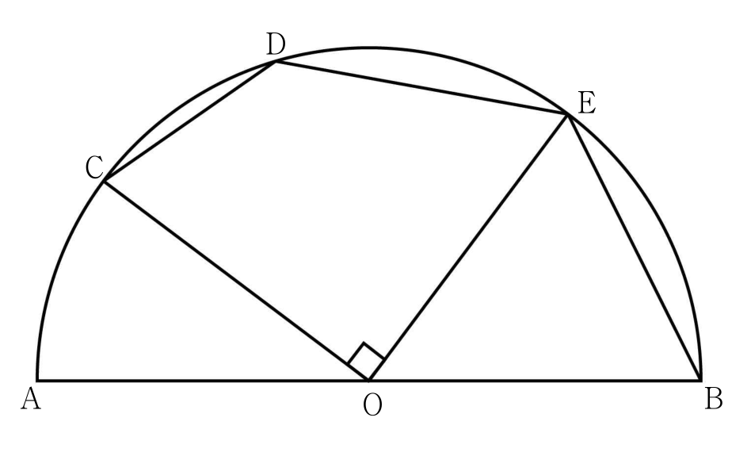

원본 (내부용)중심각의 크기가 \(\frac34\pi\)이고 호의 길이가 \(\frac23\pi\)인 부채꼴의 반지름의 길이는? [2점]
① \(\frac49\)② \(\frac59\)③ \(\frac23\)④ \(\frac79\)⑤ \(\frac89\)
원본 정답 ⑤
원본 풀이 (내부용)[출제의도] 부채꼴의 반지름의 길이 계산하기
부채꼴의 반지름의 길이를 \(r\), 중심각의 크기를 \(\theta\), 호의 길이를 \(l\)이라 하면
\(
l=r\theta
\)
에서 \(\frac23\pi=r\times\frac34\pi\)이므로
\(
r=\frac23\pi\times\frac43\pi=\frac89
\)
생성기 숫자판 1/6 · G2M9-03#2중심각의 크기가 $\frac{\pi}{4}$이고 호의 길이가 $\frac{2}{3}\pi$인 부채꼴의 반지름의 길이로 옳은 것을 고르세요.
① $2$② $\frac{7}{3}$③ $\frac{8}{3}$④ $3$⑤ $\frac{10}{3}$
정답③ $\frac{8}{3}$ 반지름의 길이를 $r$라 하면 $l=r\theta$이므로 $\frac{2}{3}\pi=r\times \frac{\pi}{4}$ 따라서 $r=\frac{8}{3}$
숫자: 원본 34 23 → 쌍둥이 4 2 3
생성기 숫자판 2/6 · G2M9-03#2중심각의 크기가 $\frac{2}{5}\pi$이고 호의 길이가 $\frac{7}{5}\pi$인 부채꼴의 반지름의 길이로 옳은 것을 고르세요.
① $2$② $\frac{5}{2}$③ $3$④ $\frac{7}{2}$⑤ $4$
정답④ $\frac{7}{2}$ 반지름의 길이를 $r$라 하면 $l=r\theta$이므로 $\frac{7}{5}\pi=r\times \frac{2}{5}\pi$ 따라서 $r=\frac{7}{2}$
숫자: 원본 34 23 → 쌍둥이 2 5 7 5
생성기 숫자판 3/6 · G2M9-03#2중심각의 크기가 $\frac{\pi}{5}$이고 호의 길이가 $\frac{\pi}{2}$인 부채꼴의 반지름의 길이로 옳은 것을 고르세요.
① $\frac{1}{2}$② $1$③ $\frac{3}{2}$④ $2$⑤ $\frac{5}{2}$
정답⑤ $\frac{5}{2}$ 반지름의 길이를 $r$라 하면 $l=r\theta$이므로 $\frac{\pi}{2}=r\times \frac{\pi}{5}$ 따라서 $r=\frac{5}{2}$
숫자: 원본 34 23 → 쌍둥이 5 2
생성기 숫자판 4/6 · G2M9-03#2중심각의 크기가 $\frac{\pi}{3}$이고 호의 길이가 $\frac{\pi}{3}$인 부채꼴의 반지름의 길이로 옳은 것을 고르세요.
① $1$② $2$③ $3$④ $4$⑤ $5$
정답① $1$ 반지름의 길이를 $r$라 하면 $l=r\theta$이므로 $\frac{\pi}{3}=r\times \frac{\pi}{3}$ 따라서 $r=1$
숫자: 원본 34 23 → 쌍둥이 3 3
생성기 숫자판 5/6 · G2M9-03#2중심각의 크기가 $\frac{3}{4}\pi$이고 호의 길이가 $3\pi$인 부채꼴의 반지름의 길이로 옳은 것을 고르세요.
① $4$② $5$③ $6$④ $7$⑤ $8$
정답① $4$ 반지름의 길이를 $r$라 하면 $l=r\theta$이므로 $3\pi=r\times \frac{3}{4}\pi$ 따라서 $r=4$
숫자: 원본 34 23 → 쌍둥이 3 4 3
생성기 숫자판 6/6 · G2M9-03#2중심각의 크기가 $\frac{2}{3}\pi$이고 호의 길이가 $\frac{2}{3}\pi$인 부채꼴의 반지름의 길이로 옳은 것을 고르세요.
① $1$② $2$③ $3$④ $4$⑤ $5$
정답① $1$ 반지름의 길이를 $r$라 하면 $l=r\theta$이므로 $\frac{2}{3}\pi=r\times \frac{2}{3}\pi$ 따라서 $r=1$
숫자: 원본 34 23 → 쌍둥이 2 3 2 3
4. 2024년 6월 4번 · 3점 · 수학Ⅰ 삼각함수 · G2M9-03#3
원본 (내부용)\(0\leq x\leq\pi\)일 때, 방정식 \(2\cos x+1=0\)의 해는? [3점]
① \(\frac{\pi}{6}\)② \(\frac{\pi}{4}\)③ \(\frac{\pi}{3}\)④ \(\frac23\pi\)⑤ \(\frac56\pi\)
그림·참고 하단 쪽수 표시: \(1/12\)
원본 정답 ④
원본 풀이 (내부용)[출제의도] 삼각함수가 포함된 방정식 이해하기
\(
2\cos x+1=0\quad\text{에서}\quad\cos x=-\frac12
\)
\(
0\le x\le\pi
\)
에서 방정식 \(\cos x=-\frac12\)의 해는 함수 \(y=\cos x\)의 그래프가 직선 \(y=-\frac12\)과 만나는 점의 \(x\)좌표와 같다.
그림: \(y=\cos x\)와 \(y=-\frac12\)의 교점을 표시한다. \(x\)축에 \(0,\frac\pi2,\frac23\pi,\pi\)가 표시되어 있고, 교점의 \(x\)좌표는 \(\frac23\pi\)이다.
따라서 \(x=\frac23\pi\).
생성기 숫자판 1/6 · G2M9-03#3$0\le x\le \pi$일 때, 방정식 $2\cos x-\sqrt{3}=0$의 해로 옳은 것을 고르세요.
① $0$② $\frac{\pi}{6}$③ $\frac{\pi}{3}$④ $\frac{\pi}{2}$⑤ $\frac{2}{3}\pi$
생성기 숫자판 6/6 · G2M1-02#5$\frac{\pi}{2}<\theta<\pi$인 $\theta$에 대하여 $\cos\theta=-\frac{5}{13}$일 때, $\tan\theta$의 값으로 옳은 것을 고르세요.
① $-\frac{24}{5}$② $-\frac{12}{5}$③ $-\frac{5}{12}$④ $\frac{5}{12}$⑤ $\frac{12}{5}$
정답② $-\frac{12}{5}$ $\sin^{2}\theta=1-\cos^{2}\theta=1-\frac{25}{169}=\frac{144}{169}$ $\frac{\pi}{2}<\theta<\pi$에서 $\sin\theta>0$이므로 $\sin\theta=\frac{12}{13}$ 따라서 $\tan\theta=\frac{\sin\theta}{\cos\theta}=-\frac{12}{5}$
숫자: 원본 2 34 → 쌍둥이 2 5 13 · 같은 수: 2
8. 2024년 6월 8번 · 3점 · 수학Ⅰ 지수·로그 · G2M9-03#6
원본 (내부용)함수 \(y=\log_3(x+a)+b\)의 그래프가 점 \((5,0)\)을 지나고 점근선이 직선 \(x=-4\)일 때, \(a+b\)의 값은? (단, \(a,\ b\)는 상수이다.) [3점]
① \(2\)② \(4\)③ \(6\)④ \(8\)⑤ \(10\)
원본 정답 ①
원본 풀이 (내부용)[출제의도] 로그함수의 그래프 이해하기
함수 \(y=\log_3(x+a)+b\)의 그래프의 점근선이 직선 \(x=-4\)이므로 \(a=4\).
한편 점 \((5,0)\)이 그래프 위의 한 점이므로
\(
0=\log_3 9+b,\quad b=-2
\)
따라서 \(a+b=2\).
생성기 숫자판 1/6 · G2M9-03#6함수 $y=\log_{5}\left(x+a\right)+b$의 그래프가 점 $\left(3,\ 2\right)$를 지나고 점근선이 직선 $x=-2$일 때, $a+b$의 값으로 옳은 것을 고르세요. (단, $a$, $b$는 상수입니다.)
① $-1$② $1$③ $3$④ $5$⑤ $7$
정답③ $3$ 함수 $y=\log_{5}\left(x+a\right)+b$의 그래프의 점근선은 직선 $x=-a$이므로 $-a=-2$, $a=2$ 점 $\left(3,\ 2\right)$가 그래프 위의 점이므로 $2=\log_{5}5+b=1+b$, $b=1$ 따라서 $a+b=2+1=3$
숫자: 원본 3 5 0 4 → 쌍둥이 5 3 2 2 · 같은 수: 3 5
생성기 숫자판 2/6 · G2M9-03#6함수 $y=\log_{3}\left(x+a\right)+b$의 그래프가 점 $\left(1,\ 1\right)$을 지나고 점근선이 직선 $x=-2$일 때, $a+b$의 값으로 옳은 것을 고르세요. (단, $a$, $b$는 상수입니다.)
① $2$② $4$③ $6$④ $8$⑤ $10$
정답① $2$ 함수 $y=\log_{3}\left(x+a\right)+b$의 그래프의 점근선은 직선 $x=-a$이므로 $-a=-2$, $a=2$ 점 $\left(1,\ 1\right)$이 그래프 위의 점이므로 $1=\log_{3}3+b=1+b$, $b=0$ 따라서 $a+b=2+0=2$
숫자: 원본 3 5 0 4 → 쌍둥이 3 1 1 2 · 같은 수: 3
생성기 숫자판 3/6 · G2M9-03#6함수 $y=\log_{3}\left(x+a\right)+b$의 그래프가 점 $\left(2,\ 2\right)$를 지나고 점근선이 직선 $x=-1$일 때, $a+b$의 값으로 옳은 것을 고르세요. (단, $a$, $b$는 상수입니다.)
① $-6$② $-4$③ $-2$④ $0$⑤ $2$
정답⑤ $2$ 함수 $y=\log_{3}\left(x+a\right)+b$의 그래프의 점근선은 직선 $x=-a$이므로 $-a=-1$, $a=1$ 점 $\left(2,\ 2\right)$가 그래프 위의 점이므로 $2=\log_{3}3+b=1+b$, $b=1$ 따라서 $a+b=1+1=2$
숫자: 원본 3 5 0 4 → 쌍둥이 3 2 2 1 · 같은 수: 3
생성기 숫자판 4/6 · G2M9-03#6함수 $y=\log_{3}\left(x+a\right)+b$의 그래프가 점 $\left(4,\ 2\right)$를 지나고 점근선이 직선 $x=-5$일 때, $a+b$의 값으로 옳은 것을 고르세요. (단, $a$, $b$는 상수입니다.)
① $-1$② $1$③ $3$④ $5$⑤ $7$
정답④ $5$ 함수 $y=\log_{3}\left(x+a\right)+b$의 그래프의 점근선은 직선 $x=-a$이므로 $-a=-5$, $a=5$ 점 $\left(4,\ 2\right)$가 그래프 위의 점이므로 $2=\log_{3}9+b=2+b$, $b=0$ 따라서 $a+b=5+0=5$
숫자: 원본 3 5 0 4 → 쌍둥이 3 4 2 5 · 같은 수: 3 4 5
생성기 숫자판 5/6 · G2M9-03#6함수 $y=\log_{3}\left(x+a\right)+b$의 그래프가 점 $\left(-1,\ -1\right)$을 지나고 점근선이 직선 $x=-4$일 때, $a+b$의 값으로 옳은 것을 고르세요. (단, $a$, $b$는 상수입니다.)
① $-6$② $-4$③ $-2$④ $0$⑤ $2$
정답⑤ $2$ 함수 $y=\log_{3}\left(x+a\right)+b$의 그래프의 점근선은 직선 $x=-a$이므로 $-a=-4$, $a=4$ 점 $\left(-1,\ -1\right)$이 그래프 위의 점이므로 $-1=\log_{3}3+b=1+b$, $b=-2$ 따라서 $a+b=4+\left(-2\right)=2$
숫자: 원본 3 5 0 4 → 쌍둥이 3 1 1 4 · 같은 수: 3 4
생성기 숫자판 6/6 · G2M9-03#6함수 $y=\log_{3}\left(x+a\right)+b$의 그래프가 점 $\left(-2,\ 1\right)$을 지나고 점근선이 직선 $x=-5$일 때, $a+b$의 값으로 옳은 것을 고르세요. (단, $a$, $b$는 상수입니다.)
① $3$② $5$③ $7$④ $9$⑤ $11$
정답② $5$ 함수 $y=\log_{3}\left(x+a\right)+b$의 그래프의 점근선은 직선 $x=-a$이므로 $-a=-5$, $a=5$ 점 $\left(-2,\ 1\right)$이 그래프 위의 점이므로 $1=\log_{3}3+b=1+b$, $b=0$ 따라서 $a+b=5+0=5$
숫자: 원본 3 5 0 4 → 쌍둥이 3 2 1 5 · 같은 수: 3 5
9. 2024년 6월 9번 · 3점 · 수학Ⅰ 삼각함수 · G2f-05#0
원본 (내부용)함수 \(y=\tan ax+b\)의 그래프가 그림과 같을 때, \(ab\)의 값은? (단, \(a,\ b\)는 상수이다.) [3점]
① \(\frac14\)② \(\frac12\)③ \(\frac34\)④ \(1\)⑤ \(\frac54\)
원본 정답 ②
원본 풀이 (내부용)[출제의도] 삼각함수의 그래프 이해하기
함수 \(y=\tan ax+b\)의 그래프가 점 \((0,2)\)를 지나므로 \(b=2\).
\(
0\le x<2\pi
\)
에서 \(x\)의 값이 증가할 때 \(y\)의 값이 증가하므로 \(a>0\).
주기가 \(4\pi\)이므로
\(
\frac\pi a=4\pi,\quad a=\frac14
\)
따라서
\(
ab=\frac14\times2=\frac12
\)
생성기 숫자판 1/6 · G2f-05#0함수 $y=\tan ax+b$의 그래프가 그림과 같고, 이웃한 두 점근선 사이의 거리가 $5\pi$이며 $y$절편이 $2$일 때, $ab$의 값으로 옮은 것을 고르세요. (단, $a$, $b$는 상수입니다.)
① $-\frac{8}{5}$② $-\frac{3}{5}$③ $\frac{2}{5}$④ $\frac{7}{5}$⑤ $\frac{12}{5}$
정답③ $\frac{2}{5}$ 이웃한 두 점근선 사이의 거리가 주기이므로 주기는 $5\pi$ $a>0$이고 $\frac{\pi}{a}=5\pi$이므로 $a=\frac{1}{5}$ $y$절편이 $2$이므로 $b=2$ 따라서 $ab=\frac{1}{5}\times (2)=\frac{2}{5}$
숫자: 원본 2 2 6 2 2 2 6 → 쌍둥이 5 2 · 같은 수: 2
생성기 숫자판 2/6 · G2f-05#0함수 $y=\tan ax+b$의 그래프가 그림과 같고, 이웃한 두 점근선 사이의 거리가 $3\pi$이며 $y$절편이 $2$일 때, $ab$의 값으로 옮은 것을 고르세요. (단, $a$, $b$는 상수입니다.)
① $-\frac{4}{3}$② $-\frac{1}{3}$③ $\frac{2}{3}$④ $\frac{5}{3}$⑤ $\frac{8}{3}$
정답③ $\frac{2}{3}$ 이웃한 두 점근선 사이의 거리가 주기이므로 주기는 $3\pi$ $a>0$이고 $\frac{\pi}{a}=3\pi$이므로 $a=\frac{1}{3}$ $y$절편이 $2$이므로 $b=2$ 따라서 $ab=\frac{1}{3}\times (2)=\frac{2}{3}$
숫자: 원본 2 2 6 2 2 2 6 → 쌍둥이 3 2 · 같은 수: 2
생성기 숫자판 3/6 · G2f-05#0함수 $y=\tan ax+b$의 그래프가 그림과 같고, 이웃한 두 점근선 사이의 거리가 $2\pi$이며 $y$절편이 $1$일 때, $ab$의 값으로 옮은 것을 고르세요. (단, $a$, $b$는 상수입니다.)
① $-\frac{3}{2}$② $-\frac{1}{2}$③ $\frac{1}{2}$④ $\frac{3}{2}$⑤ $\frac{5}{2}$
정답③ $\frac{1}{2}$ 이웃한 두 점근선 사이의 거리가 주기이므로 주기는 $2\pi$ $a>0$이고 $\frac{\pi}{a}=2\pi$이므로 $a=\frac{1}{2}$ $y$절편이 $1$이므로 $b=1$ 따라서 $ab=\frac{1}{2}\times (1)=\frac{1}{2}$
숫자: 원본 2 2 6 2 2 2 6 → 쌍둥이 2 1 · 같은 수: 2
생성기 숫자판 4/6 · G2f-05#0함수 $y=\tan ax+b$의 그래프가 그림과 같고, 이웃한 두 점근선 사이의 거리가 $2\pi$이며 $y$절편이 $3$일 때, $ab$의 값으로 옮은 것을 고르세요. (단, $a$, $b$는 상수입니다.)
① $-\frac{1}{2}$② $\frac{1}{2}$③ $\frac{3}{2}$④ $\frac{5}{2}$⑤ $\frac{7}{2}$
정답③ $\frac{3}{2}$ 이웃한 두 점근선 사이의 거리가 주기이므로 주기는 $2\pi$ $a>0$이고 $\frac{\pi}{a}=2\pi$이므로 $a=\frac{1}{2}$ $y$절편이 $3$이므로 $b=3$ 따라서 $ab=\frac{1}{2}\times (3)=\frac{3}{2}$
숫자: 원본 2 2 6 2 2 2 6 → 쌍둥이 2 3 · 같은 수: 2
생성기 숫자판 5/6 · G2f-05#0함수 $y=\tan ax+b$의 그래프가 그림과 같고, 이웃한 두 점근선 사이의 거리가 $2\pi$이며 $y$절편이 $-3$일 때, $ab$의 값으로 옮은 것을 고르세요. (단, $a$, $b$는 상수입니다.)
① $-\frac{7}{2}$② $-\frac{5}{2}$③ $-\frac{3}{2}$④ $-\frac{1}{2}$⑤ $\frac{1}{2}$
정답③ $-\frac{3}{2}$ 이웃한 두 점근선 사이의 거리가 주기이므로 주기는 $2\pi$ $a>0$이고 $\frac{\pi}{a}=2\pi$이므로 $a=\frac{1}{2}$ $y$절편이 $-3$이므로 $b=-3$ 따라서 $ab=\frac{1}{2}\times (-3)=-\frac{3}{2}$
숫자: 원본 2 2 6 2 2 2 6 → 쌍둥이 2 3 · 같은 수: 2
생성기 숫자판 6/6 · G2f-05#0함수 $y=\tan ax+b$의 그래프가 그림과 같고, 이웃한 두 점근선 사이의 거리가 $6\pi$이며 $y$절편이 $1$일 때, $ab$의 값으로 옮은 것을 고르세요. (단, $a$, $b$는 상수입니다.)
① $-\frac{11}{6}$② $-\frac{5}{6}$③ $\frac{1}{6}$④ $\frac{7}{6}$⑤ $\frac{13}{6}$
정답③ $\frac{1}{6}$ 이웃한 두 점근선 사이의 거리가 주기이므로 주기는 $6\pi$ $a>0$이고 $\frac{\pi}{a}=6\pi$이므로 $a=\frac{1}{6}$ $y$절편이 $1$이므로 $b=1$ 따라서 $ab=\frac{1}{6}\times (1)=\frac{1}{6}$
숫자: 원본 2 2 6 2 2 2 6 → 쌍둥이 6 1 · 같은 수: 6
10. 2024년 6월 10번 · 3점 · 수학Ⅰ 지수·로그 · G2M9-03#7
원본 (내부용)함수 \(y=5^x+1\)의 역함수의 그래프가 점 \((4,\log_5 a)\)를 지날 때, \(a\)의 값은? [3점]
① \(1\)② \(2\)③ \(3\)④ \(4\)⑤ \(5\)
그림·참고 하단 쪽수 표시: \(3/12\)
원본 정답 ③
원본 풀이 (내부용)[출제의도] 지수함수의 역함수 이해하기
함수 \(y=5^x+1\)의 역함수의 그래프가 점 \((4,\log_5a)\)를 지나므로 함수 \(y=5^x+1\)의 그래프는 점 \((\log_5a,4)\)를 지난다.
따라서
\(
4=5^{\log_5a}+1
\)
이고 로그의 성질에 의하여 \(a+1=4\)이므로 \(a=3\).
생성기 숫자판 1/6 · G2M9-03#7함수 $y=5^{x}+2$의 역함수의 그래프가 점 $\left(6,\ \log_{5}a\right)$를 지날 때, $a$의 값으로 옳은 것을 고르세요.
① $4$② $5$③ $6$④ $7$⑤ $8$
정답① $4$ 함수 $y=5^{x}+2$의 역함수의 그래프가 점 $\left(6,\ \log_{5}a\right)$를 지나므로 함수 $y=5^{x}+2$의 그래프는 점 $\left(\log_{5}a,\ 6\right)$를 지납니다. $6=5^{\log_{5}a}+2=a+2$ 따라서 $a=4$
숫자: 원본 5 1 4 5 → 쌍둥이 5 2 6 5 · 같은 수: 5
생성기 숫자판 2/6 · G2M9-03#7함수 $y=2^{x}+2$의 역함수의 그래프가 점 $\left(8,\ \log_{2}a\right)$를 지날 때, $a$의 값으로 옳은 것을 고르세요.
① $4$② $5$③ $6$④ $7$⑤ $8$
정답③ $6$ 함수 $y=2^{x}+2$의 역함수의 그래프가 점 $\left(8,\ \log_{2}a\right)$를 지나므로 함수 $y=2^{x}+2$의 그래프는 점 $\left(\log_{2}a,\ 8\right)$를 지납니다. $8=2^{\log_{2}a}+2=a+2$ 따라서 $a=6$
숫자: 원본 5 1 4 5 → 쌍둥이 2 2 8 2
생성기 숫자판 3/6 · G2M9-03#7함수 $y=2^{x}-1$의 역함수의 그래프가 점 $\left(2,\ \log_{2}a\right)$를 지날 때, $a$의 값으로 옳은 것을 고르세요.
① $1$② $2$③ $3$④ $4$⑤ $5$
정답③ $3$ 함수 $y=2^{x}-1$의 역함수의 그래프가 점 $\left(2,\ \log_{2}a\right)$를 지나므로 함수 $y=2^{x}-1$의 그래프는 점 $\left(\log_{2}a,\ 2\right)$를 지납니다. $2=2^{\log_{2}a}-1=a-1$ 따라서 $a=3$
숫자: 원본 5 1 4 5 → 쌍둥이 2 1 2 2 · 같은 수: 1
생성기 숫자판 4/6 · G2M9-03#7함수 $y=2^{x}-3$의 역함수의 그래프가 점 $\left(0,\ \log_{2}a\right)$를 지날 때, $a$의 값으로 옳은 것을 고르세요.
① $3$② $4$③ $5$④ $6$⑤ $7$
정답① $3$ 함수 $y=2^{x}-3$의 역함수의 그래프가 점 $\left(0,\ \log_{2}a\right)$를 지나므로 함수 $y=2^{x}-3$의 그래프는 점 $\left(\log_{2}a,\ 0\right)$를 지납니다. $0=2^{\log_{2}a}-3=a-3$ 따라서 $a=3$
숫자: 원본 5 1 4 5 → 쌍둥이 2 3 0 2
생성기 숫자판 5/6 · G2M9-03#7함수 $y=5^{x}+4$의 역함수의 그래프가 점 $\left(9,\ \log_{5}a\right)$를 지날 때, $a$의 값으로 옳은 것을 고르세요.
① $3$② $4$③ $5$④ $6$⑤ $7$
정답③ $5$ 함수 $y=5^{x}+4$의 역함수의 그래프가 점 $\left(9,\ \log_{5}a\right)$를 지나므로 함수 $y=5^{x}+4$의 그래프는 점 $\left(\log_{5}a,\ 9\right)$를 지납니다. $9=5^{\log_{5}a}+4=a+4$ 따라서 $a=5$
숫자: 원본 5 1 4 5 → 쌍둥이 5 4 9 5 · 같은 수: 4 5
생성기 숫자판 6/6 · G2M9-03#7함수 $y=2^{x}-3$의 역함수의 그래프가 점 $\left(-1,\ \log_{2}a\right)$를 지날 때, $a$의 값으로 옳은 것을 고르세요.
① $1$② $2$③ $3$④ $4$⑤ $5$
정답② $2$ 함수 $y=2^{x}-3$의 역함수의 그래프가 점 $\left(-1,\ \log_{2}a\right)$를 지나므로 함수 $y=2^{x}-3$의 그래프는 점 $\left(\log_{2}a,\ -1\right)$를 지납니다. $-1=2^{\log_{2}a}-3=a-3$ 따라서 $a=2$
숫자: 원본 5 1 4 5 → 쌍둥이 2 3 1 2 · 같은 수: 1
11. 2024년 6월 11번 · 3점 · 수학Ⅰ 지수·로그 · G2M9-03#8
원본 (내부용)함수 \(y=4^x-6\)의 그래프를 \(x\)축의 방향으로 \(a\)만큼, \(y\)축의 방향으로 \(b\)만큼 평행이동한 그래프가 원점을 지나고 점근선이 직선 \(y=-2\)일 때, \(ab\)의 값은? (단, \(a,\ b\)는 상수이다.) [3점]
① \(-5\)② \(-4\)③ \(-3\)④ \(-2\)⑤ \(-1\)
원본 정답 ④
원본 풀이 (내부용)[출제의도] 지수함수의 그래프 이해하기
함수 \(y=4^x-6\)의 그래프를 \(x\)축의 방향으로 \(a\)만큼, \(y\)축의 방향으로 \(b\)만큼 평행이동한 그래프를 나타내는 함수는
\(
y=4^{x-a}-6+b
\)
이다.
이 함수의 그래프의 점근선이 직선 \(y=-2\)이므로
\(
-6+b=-2,\quad b=4
\)
한편 이 그래프가 원점을 지나므로
\(
0=4^{-a}-2,\quad a=-\frac12
\)
따라서
\(
ab=-\frac12\times4=-2
\)
생성기 숫자판 1/6 · G2M9-03#8함수 $y=2^{x}+3$의 그래프를 $x$축의 방향으로 $a$만큼, $y$축의 방향으로 $b$만큼 평행이동한 그래프가 원점을 지나고 점근선이 직선 $y=-2$일 때, $ab$의 값으로 옳은 것을 고르세요. (단, $a$, $b$는 상수입니다.)
① $2$② $3$③ $4$④ $5$⑤ $6$
정답④ $5$ 평행이동한 그래프의 식은 $y=2^{x-a}+3+b$이고 점근선은 직선 $y=3+b$ $3+b=-2$이므로 $b=-5$ 원점을 지나므로 $0=2^{-a}-2$, $2^{-a}=2$, $-a=1$, $a=-1$ 따라서 $ab=\left(-1\right)\times \left(-5\right)=5$
숫자: 원본 4 6 2 → 쌍둥이 2 3 2 · 같은 수: 2
생성기 숫자판 2/6 · G2M9-03#8함수 $y=4^{x}-3$의 그래프를 $x$축의 방향으로 $a$만큼, $y$축의 방향으로 $b$만큼 평행이동한 그래프가 원점을 지나고 점근선이 직선 $y=-4$일 때, $ab$의 값으로 옳은 것을 고르세요. (단, $a$, $b$는 상수입니다.)
① $-3$② $-2$③ $-1$④ $0$⑤ $1$
정답⑤ $1$ 평행이동한 그래프의 식은 $y=4^{x-a}-3+b$이고 점근선은 직선 $y=-3+b$ $-3+b=-4$이므로 $b=-1$ 원점을 지나므로 $0=4^{-a}-4$, $4^{-a}=4$, $-a=1$, $a=-1$ 따라서 $ab=\left(-1\right)\times \left(-1\right)=1$
숫자: 원본 4 6 2 → 쌍둥이 4 3 4 · 같은 수: 4
생성기 숫자판 3/6 · G2M9-03#8함수 $y=8^{x}+2$의 그래프를 $x$축의 방향으로 $a$만큼, $y$축의 방향으로 $b$만큼 평행이동한 그래프가 원점을 지나고 점근선이 직선 $y=-2$일 때, $ab$의 값으로 옳은 것을 고르세요. (단, $a$, $b$는 상수입니다.)
① $\frac{4}{3}$② $\frac{7}{3}$③ $\frac{10}{3}$④ $\frac{13}{3}$⑤ $\frac{16}{3}$
정답① $\frac{4}{3}$ 평행이동한 그래프의 식은 $y=8^{x-a}+2+b$이고 점근선은 직선 $y=2+b$ $2+b=-2$이므로 $b=-4$ 원점을 지나므로 $0=8^{-a}-2$, $8^{-a}=2$, $-a=\frac{1}{3}$, $a=-\frac{1}{3}$ 따라서 $ab=\left(-\frac{1}{3}\right)\times \left(-4\right)=\frac{4}{3}$
숫자: 원본 4 6 2 → 쌍둥이 8 2 2 · 같은 수: 2
생성기 숫자판 4/6 · G2M9-03#8함수 $y=4^{x}-7$의 그래프를 $x$축의 방향으로 $a$만큼, $y$축의 방향으로 $b$만큼 평행이동한 그래프가 원점을 지나고 점근선이 직선 $y=-2$일 때, $ab$의 값으로 옳은 것을 고르세요. (단, $a$, $b$는 상수입니다.)
① $-\frac{5}{2}$② $-\frac{3}{2}$③ $-\frac{1}{2}$④ $\frac{1}{2}$⑤ $\frac{3}{2}$
정답① $-\frac{5}{2}$ 평행이동한 그래프의 식은 $y=4^{x-a}-7+b$이고 점근선은 직선 $y=-7+b$ $-7+b=-2$이므로 $b=5$ 원점을 지나므로 $0=4^{-a}-2$, $4^{-a}=2$, $-a=\frac{1}{2}$, $a=-\frac{1}{2}$ 따라서 $ab=\left(-\frac{1}{2}\right)\times 5=-\frac{5}{2}$
숫자: 원본 4 6 2 → 쌍둥이 4 7 2 · 같은 수: 2 4
생성기 숫자판 5/6 · G2M9-03#8함수 $y=2^{x}-5$의 그래프를 $x$축의 방향으로 $a$만큼, $y$축의 방향으로 $b$만큼 평행이동한 그래프가 원점을 지나고 점근선이 직선 $y=-2$일 때, $ab$의 값으로 옳은 것을 고르세요. (단, $a$, $b$는 상수입니다.)
① $-5$② $-4$③ $-3$④ $-2$⑤ $-1$
정답③ $-3$ 평행이동한 그래프의 식은 $y=2^{x-a}-5+b$이고 점근선은 직선 $y=-5+b$ $-5+b=-2$이므로 $b=3$ 원점을 지나므로 $0=2^{-a}-2$, $2^{-a}=2$, $-a=1$, $a=-1$ 따라서 $ab=\left(-1\right)\times 3=-3$
숫자: 원본 4 6 2 → 쌍둥이 2 5 2 · 같은 수: 2
생성기 숫자판 6/6 · G2M9-03#8함수 $y=4^{x}-3$의 그래프를 $x$축의 방향으로 $a$만큼, $y$축의 방향으로 $b$만큼 평행이동한 그래프가 원점을 지나고 점근선이 직선 $y=-2$일 때, $ab$의 값으로 옳은 것을 고르세요. (단, $a$, $b$는 상수입니다.)
① $-\frac{9}{2}$② $-\frac{7}{2}$③ $-\frac{5}{2}$④ $-\frac{3}{2}$⑤ $-\frac{1}{2}$
정답⑤ $-\frac{1}{2}$ 평행이동한 그래프의 식은 $y=4^{x-a}-3+b$이고 점근선은 직선 $y=-3+b$ $-3+b=-2$이므로 $b=1$ 원점을 지나므로 $0=4^{-a}-2$, $4^{-a}=2$, $-a=\frac{1}{2}$, $a=-\frac{1}{2}$ 따라서 $ab=\left(-\frac{1}{2}\right)\times 1=-\frac{1}{2}$
숫자: 원본 4 6 2 → 쌍둥이 4 3 2 · 같은 수: 2 4
12. 2024년 6월 12번 · 3점 · 수학Ⅰ 삼각함수 · G2M9-04#0
원본 (내부용)실수 \(k\)에 대하여 함수 \( f(x)=2\cos^2 x+2\sin x+k \) 의 최댓값이 \(\frac{15}{2}\)일 때, 함수 \(f(x)\)의 최솟값은? [3점]
① \(1\)② \(2\)③ \(3\)④ \(4\)⑤ \(5\)
그림·참고 하단 쪽수 표시: \(4/12\)
원본 정답 ③
원본 풀이 (내부용)[출제의도] 삼각함수의 성질을 이용하여 함수의 최솟값 구하는 문제 해결하기
\(
\cos^2x=1-\sin^2x
\)
이므로
\(
\begin{aligned}
f(x)&=2\cos^2x+2\sin x+k\\
&=2(1-\sin^2x)+2\sin x+k\\
&=-2\sin^2x+2\sin x+2+k
\end{aligned}
\)
\(\sin x=t\)라 하면 \(-1\le t\le1\)이고
\(
\begin{aligned}
y&=-2t^2+2t+2+k\\
&=-2\left(t^2-t+\frac14\right)+\frac52+k\\
&=-2\left(t-\frac12\right)^2+\frac52+k
\end{aligned}
\)
함수 \(y=-2(t-\frac12)^2+\frac52+k\)는 \(t=\frac12\)에서 최댓값 \(\frac52+k\)를 갖는다. 따라서
\(
\frac52+k=\frac{15}{2},\quad k=5
\)
그러므로 함수 \(y=-2t^2+2t+7\)은 \(t=-1\)에서 최솟값
\(
-2\times(-1)^2+2\times(-1)+7=3
\)
을 갖는다. 즉 \(f(x)\)의 최솟값은 \(3\)이다.
생성기 숫자판 1/6 · G2M9-04#0실수 $k$에 대하여 함수 $f\left(x\right)=2\cos^{2}x+2\sin x+k$의 최댓값이 $\frac{3}{2}$일 때, 함수 $f\left(x\right)$의 최솟값으로 옳은 것을 고르세요.
① $-7$② $-6$③ $-5$④ $-4$⑤ $-3$
정답⑤ $-3$ $\cos^{2}x=1-\sin^{2}x$이므로 $f\left(x\right)=-2\sin^{2}x+2\sin x+2+k$ $\sin x=t$라 하면 $-1\le t\le 1$이고 $y=-2\left(t-\frac{1}{2}\right)^{2}+\frac{5}{2}+k$ $t=\frac{1}{2}$일 때 최댓값 $\frac{5}{2}+k$를 가지므로 $\frac{5}{2}+k=\frac{3}{2}$, $k=-1$ $t=-1$일 때 최솟값을 가지므로 최솟값은 $-2\times \left(-1\right)^{2}+2\times \left(-1\right)+2+\left(-1\right)=-3$
숫자: 원본 2 2 15 2 → 쌍둥이 2 2 3 2 · 같은 수: 2
생성기 숫자판 2/6 · G2M9-04#0실수 $k$에 대하여 함수 $f\left(x\right)=3\cos^{2}x-4\sin x+k$의 최댓값이 $\frac{25}{3}$일 때, 함수 $f\left(x\right)$의 최솟값으로 옳은 것을 고르세요.
① $-3$② $-2$③ $-1$④ $0$⑤ $1$
정답④ $0$ $\cos^{2}x=1-\sin^{2}x$이므로 $f\left(x\right)=-3\sin^{2}x-4\sin x+3+k$ $\sin x=t$라 하면 $-1\le t\le 1$이고 $y=-3\left(t+\frac{2}{3}\right)^{2}+\frac{13}{3}+k$ $t=-\frac{2}{3}$일 때 최댓값 $\frac{13}{3}+k$를 가지므로 $\frac{13}{3}+k=\frac{25}{3}$, $k=4$ $t=1$일 때 최솟값을 가지므로 최솟값은 $-3\times 1^{2}-4\times 1+3+4=0$
숫자: 원본 2 2 15 2 → 쌍둥이 3 4 25 3
생성기 숫자판 3/6 · G2M9-04#0실수 $k$에 대하여 함수 $f\left(x\right)=\cos^{2}x+\sin x+k$의 최댓값이 $\frac{1}{4}$일 때, 함수 $f\left(x\right)$의 최솟값으로 옳은 것을 고르세요.
① $-6$② $-5$③ $-4$④ $-3$⑤ $-2$
정답⑤ $-2$ $\cos^{2}x=1-\sin^{2}x$이므로 $f\left(x\right)=-\sin^{2}x+\sin x+1+k$ $\sin x=t$라 하면 $-1\le t\le 1$이고 $y=-\left(t-\frac{1}{2}\right)^{2}+\frac{5}{4}+k$ $t=\frac{1}{2}$일 때 최댓값 $\frac{5}{4}+k$를 가지므로 $\frac{5}{4}+k=\frac{1}{4}$, $k=-1$ $t=-1$일 때 최솟값을 가지므로 최솟값은 $-1\times \left(-1\right)^{2}+1\times \left(-1\right)+1+\left(-1\right)=-2$
숫자: 원본 2 2 15 2 → 쌍둥이 1 4
생성기 숫자판 4/6 · G2M9-04#0실수 $k$에 대하여 함수 $f\left(x\right)=3\cos^{2}x-2\sin x+k$의 최댓값이 $\frac{13}{3}$일 때, 함수 $f\left(x\right)$의 최솟값으로 옳은 것을 고르세요.
① $-3$② $-2$③ $-1$④ $0$⑤ $1$
정답③ $-1$ $\cos^{2}x=1-\sin^{2}x$이므로 $f\left(x\right)=-3\sin^{2}x-2\sin x+3+k$ $\sin x=t$라 하면 $-1\le t\le 1$이고 $y=-3\left(t+\frac{1}{3}\right)^{2}+\frac{10}{3}+k$ $t=-\frac{1}{3}$일 때 최댓값 $\frac{10}{3}+k$를 가지므로 $\frac{10}{3}+k=\frac{13}{3}$, $k=1$ $t=1$일 때 최솟값을 가지므로 최솟값은 $-3\times 1^{2}-2\times 1+3+1=-1$
숫자: 원본 2 2 15 2 → 쌍둥이 3 2 13 3 · 같은 수: 2
생성기 숫자판 5/6 · G2M9-04#0실수 $k$에 대하여 함수 $f\left(x\right)=2\cos^{2}x-3\sin x+k$의 최댓값이 $\frac{73}{8}$일 때, 함수 $f\left(x\right)$의 최솟값으로 옳은 것을 고르세요.
① $3$② $4$③ $5$④ $6$⑤ $7$
정답① $3$ $\cos^{2}x=1-\sin^{2}x$이므로 $f\left(x\right)=-2\sin^{2}x-3\sin x+2+k$ $\sin x=t$라 하면 $-1\le t\le 1$이고 $y=-2\left(t+\frac{3}{4}\right)^{2}+\frac{25}{8}+k$ $t=-\frac{3}{4}$일 때 최댓값 $\frac{25}{8}+k$를 가지므로 $\frac{25}{8}+k=\frac{73}{8}$, $k=6$ $t=1$일 때 최솟값을 가지므로 최솟값은 $-2\times 1^{2}-3\times 1+2+6=3$
숫자: 원본 2 2 15 2 → 쌍둥이 2 3 73 8 · 같은 수: 2
생성기 숫자판 6/6 · G2M9-04#0실수 $k$에 대하여 함수 $f\left(x\right)=2\cos^{2}x-3\sin x+k$의 최댓값이 $\frac{17}{8}$일 때, 함수 $f\left(x\right)$의 최솟값으로 옳은 것을 고르세요.
① $-8$② $-7$③ $-6$④ $-5$⑤ $-4$
정답⑤ $-4$ $\cos^{2}x=1-\sin^{2}x$이므로 $f\left(x\right)=-2\sin^{2}x-3\sin x+2+k$ $\sin x=t$라 하면 $-1\le t\le 1$이고 $y=-2\left(t+\frac{3}{4}\right)^{2}+\frac{25}{8}+k$ $t=-\frac{3}{4}$일 때 최댓값 $\frac{25}{8}+k$를 가지므로 $\frac{25}{8}+k=\frac{17}{8}$, $k=-1$ $t=1$일 때 최솟값을 가지므로 최솟값은 $-2\times 1^{2}-3\times 1+2+\left(-1\right)=-4$
숫자: 원본 2 2 15 2 → 쌍둥이 2 3 17 8 · 같은 수: 2
13. 2024년 6월 13번 · 3점 · 수학Ⅰ 지수·로그 · G2M9-04#1
원본 (내부용)부등식 \(2^{2x+3}+2\leq17\times2^x\)을 만족시키는 정수 \(x\)의 개수는? [3점]
① \(1\)② \(3\)③ \(5\)④ \(7\)⑤ \(9\)
원본 정답 ③
원본 풀이 (내부용)[출제의도] 지수함수가 포함된 부등식 이해하기
\(
2^{2x+3}+2\le17\times2^{2x}
\)
에서 \(2^x=t\;(t>0)\)이라 하면
\(
8t^2-17t+2\le0
\)
\(
(t-2)(8t-1)\le0
\)
\(
\frac18\le t\le2
\)
\(
2^{-3}\le2^x\le2^1,\quad -3\le x\le1
\)
이고 이를 만족시키는 모든 정수 \(x\)의 값은
\(
-3,-2,-1,0,1
\)
이므로 개수는 \(5\)이다.
생성기 숫자판 1/6 · G2M9-04#1부등식 $3^{2x+1}+3\le 10\times 3^{x}$을 만족시키는 정수 $x$의 개수로 옳은 것을 고르세요.
① $1$② $3$③ $5$④ $7$⑤ $9$
정답② $3$ $3^{x}=t\ \left(t>0\right)$라 하면 $3t^{2}-10t+3\le 0$ $\left(3t-1\right)\left(t-3\right)\le 0$이므로 $\frac{1}{3}\le t\le 3$ $3^{-1}\le 3^{x}\le 3^{1}$이고 밑 $3$이 $1$보다 크므로 $-1\le x\le 1$ 따라서 정수 $x$는 $-1,\ 0,\ 1$이고 그 개수는 $3$
숫자: 원본 2 3 2 17 2 → 쌍둥이 3 1 3 10 3 · 같은 수: 3
생성기 숫자판 2/6 · G2M9-04#1부등식 $2^{2x+2}+4\le 17\times 2^{x}$을 만족시키는 정수 $x$의 개수로 옳은 것을 고르세요.
① $3$② $5$③ $7$④ $9$⑤ $11$
정답② $5$ $2^{x}=t\ \left(t>0\right)$라 하면 $4t^{2}-17t+4\le 0$ $\left(4t-1\right)\left(t-4\right)\le 0$이므로 $\frac{1}{4}\le t\le 4$ $2^{-2}\le 2^{x}\le 2^{2}$이고 밑 $2$가 $1$보다 크므로 $-2\le x\le 2$ 따라서 정수 $x$는 $-2,\ -1,\ 0,\ 1,\ 2$이고 그 개수는 $5$
숫자: 원본 2 3 2 17 2 → 쌍둥이 2 2 4 17 2 · 같은 수: 2 17
생성기 숫자판 3/6 · G2M9-04#1부등식 $3^{2x+2}+3\le 28\times 3^{x}$을 만족시키는 정수 $x$의 개수로 옳은 것을 고르세요.
① $2$② $4$③ $6$④ $8$⑤ $10$
정답② $4$ $3^{x}=t\ \left(t>0\right)$라 하면 $9t^{2}-28t+3\le 0$ $\left(9t-1\right)\left(t-3\right)\le 0$이므로 $\frac{1}{9}\le t\le 3$ $3^{-2}\le 3^{x}\le 3^{1}$이고 밑 $3$이 $1$보다 크므로 $-2\le x\le 1$ 따라서 정수 $x$는 $-2,\ -1,\ 0,\ 1$이고 그 개수는 $4$
숫자: 원본 2 3 2 17 2 → 쌍둥이 3 2 3 28 3 · 같은 수: 2 3
생성기 숫자판 4/6 · G2M9-04#1부등식 $3^{2x+1}+9\le 28\times 3^{x}$을 만족시키는 정수 $x$의 개수로 옳은 것을 고르세요.
① $2$② $4$③ $6$④ $8$⑤ $10$
정답② $4$ $3^{x}=t\ \left(t>0\right)$라 하면 $3t^{2}-28t+9\le 0$ $\left(3t-1\right)\left(t-9\right)\le 0$이므로 $\frac{1}{3}\le t\le 9$ $3^{-1}\le 3^{x}\le 3^{2}$이고 밑 $3$이 $1$보다 크므로 $-1\le x\le 2$ 따라서 정수 $x$는 $-1,\ 0,\ 1,\ 2$이고 그 개수는 $4$
숫자: 원본 2 3 2 17 2 → 쌍둥이 3 1 9 28 3 · 같은 수: 3
생성기 숫자판 5/6 · G2M9-04#1부등식 $2^{2x+3}+4\le 33\times 2^{x}$을 만족시키는 정수 $x$의 개수로 옳은 것을 고르세요.
① $4$② $6$③ $8$④ $10$⑤ $12$
정답② $6$ $2^{x}=t\ \left(t>0\right)$라 하면 $8t^{2}-33t+4\le 0$ $\left(8t-1\right)\left(t-4\right)\le 0$이므로 $\frac{1}{8}\le t\le 4$ $2^{-3}\le 2^{x}\le 2^{2}$이고 밑 $2$가 $1$보다 크므로 $-3\le x\le 2$ 따라서 정수 $x$는 $-3,\ -2,\ \cdots,\ 2$이고 그 개수는 $6$
숫자: 원본 2 3 2 17 2 → 쌍둥이 2 3 4 33 2 · 같은 수: 2 3
생성기 숫자판 6/6 · G2M9-04#1부등식 $3^{2x+2}+9\le 82\times 3^{x}$을 만족시키는 정수 $x$의 개수로 옳은 것을 고르세요.
① $3$② $5$③ $7$④ $9$⑤ $11$
정답② $5$ $3^{x}=t\ \left(t>0\right)$라 하면 $9t^{2}-82t+9\le 0$ $\left(9t-1\right)\left(t-9\right)\le 0$이므로 $\frac{1}{9}\le t\le 9$ $3^{-2}\le 3^{x}\le 3^{2}$이고 밑 $3$이 $1$보다 크므로 $-2\le x\le 2$ 따라서 정수 $x$는 $-2,\ -1,\ 0,\ 1,\ 2$이고 그 개수는 $5$
숫자: 원본 2 3 2 17 2 → 쌍둥이 3 2 9 82 3 · 같은 수: 2 3
14. 2024년 6월 14번 · 4점 · 수학Ⅰ 지수·로그 · 4점 쌍둥이
원본 (내부용)모든 실수 \(x\)에 대하여 \(\log_a(x^2+ax+a+8)\)이 정의되기 위한 모든 정수 \(a\)의 값의 합은? [4점]
① \(27\)② \(29\)③ \(31\)④ \(33\)⑤ \(35\)
그림·참고 하단 쪽수 표시: \(5/12\)
원본 정답 ①
원본 풀이 (내부용)[출제의도] 로그의 정의 이해하기
\(\log_a(x^2+ax+a+8)\)의 정의역이 실수 전체가 되기 위해서는
\(
a>0,\quad a\ne1,\quad x^2+ax+a+8>0
\)
이어야 한다.
모든 실수 \(x\)에 대하여 부등식 \(x^2+ax+a+8>0\)이 성립하기 위해서는 이차방정식 \(x^2+ax+a+8=0\)의 판별식을 \(D\)라 하면 \(D<0\)이어야 한다.
\(
D=a^2-4(a+8)=a^2-4a-32=(a+4)(a-8)<0
\)
즉 \(-4<a<8\)이어야 한다.
따라서 \(a>0,\ a\ne1,\ -4<a<8\)을 모두 만족시키는 모든 정수 \(a\)의 값의 합은
\(
2+3+4+5+6+7=27
\)
쌍둥이 1/5 · 4점 쌍둥이모든 실수 $x$에 대하여 $\log_a(x^2+ax+a+15)$가 정의되도록 하는 모든 정수 $a$의 개수를 구하세요.
① $6$② $7$③ $8$④ $9$⑤ $10$
정답③ $8$ 로그가 모든 실수 $x$에서 정의되려면 $a>0$, $a\ne1$이고 진수 이차식은 항상 양수여야 한다. 따라서 판별식이 $0$보다 작아야 한다. $a^2-4(a+15)=(a-10)(a+6)<0$에서 $-6<a<10$이다. 가능한 정수 밑은 $2,3,4,5,6,7,8,9$로 모두 여덟 개이다.
숫자: 원본 8 → 쌍둥이 15
쌍둥이 2/5 · 4점 쌍둥이모든 실수 $x$에 대하여 $\log_{a}(x^{2}+ax+a+3)$이 정의되기 위한 모든 정수 $a$의 값의 합으로 옳은 것을 고르세요.
① $10$② $12$③ $14$④ $16$⑤ $18$
정답③ $14$ 밑 조건에서 $a>0$, $a\ne1$ 모든 실수 $x$에 대하여 $x^{2}+ax+a+3>0$이므로 판별식 $a^{2}-4(a+3)<0$, 즉 $(a-6)(a+2)<0$ $-2<a<6$이고 $a>1$이므로 정수 $a$는 $2, 3, 4, 5$ 합은 $14$
숫자: 원본 8 → 쌍둥이 3
쌍둥이 3/5 · 4점 쌍둥이모든 실수 $x$에 대하여 $\log_{a}(x^{2}+ax+a+15)$가 정의되기 위한 모든 정수 $a$의 값의 합으로 옳은 것을 고르세요.
① $38$② $40$③ $42$④ $44$⑤ $46$
정답④ $44$ 밑 조건에서 $a>0$, $a\ne1$ 모든 실수 $x$에 대하여 $x^{2}+ax+a+15>0$이므로 판별식 $a^{2}-4(a+15)<0$, 즉 $(a-10)(a+6)<0$ $-6<a<10$이고 $a>1$이므로 정수 $a$는 $2, 3, 4, 5, 6, 7, 8, 9$ 합은 $44$
숫자: 원본 8 → 쌍둥이 15
쌍둥이 4/5 · 4점 쌍둥이모든 실수 $x$에 대하여 $\log_{a}(x^{2}+ax+a+24)$가 정의되기 위한 모든 정수 $a$의 값의 합으로 옳은 것을 고르세요.
① $57$② $59$③ $61$④ $63$⑤ $65$
정답⑤ $65$ 밑 조건에서 $a>0$, $a\ne1$ 모든 실수 $x$에 대하여 $x^{2}+ax+a+24>0$이므로 판별식 $a^{2}-4(a+24)<0$, 즉 $(a-12)(a+8)<0$ $-8<a<12$이고 $a>1$이므로 정수 $a$는 $2, 3, 4, 5, 6, 7, 8, 9, 10, 11$ 합은 $65$
숫자: 원본 8 → 쌍둥이 24
쌍둥이 5/5 · 4점 쌍둥이모든 실수 $x$에 대하여 $\log_a(x^2+ax+a+8)$이 정의되도록 하는 모든 정수 $a$의 개수를 구하세요.
① $4$② $5$③ $6$④ $7$⑤ $8$
정답③ $6$ 로그 밑은 $a>0$, $a\ne1$이어야 한다. 진수의 이차식이 모든 실수에서 양수이려면 판별식이 음수여야 한다. 판별식은 $a^2-4(a+8)=(a-8)(a+4)$이므로 $-4<a<8$이다. 이 범위의 양의 정수 밑 중 $1$을 제외하면 $a=2,3,4,5,6,7$이어서 여섯 개이다.
숫자: 원본 8 → 쌍둥이 8 · 같은 수: 8
15. 2024년 6월 15번 · 4점 · 수학Ⅰ 삼각함수 · 4점 쌍둥이
원본 (내부용)좌표평면에서 원 \(x^2+y^2=r^2\;(r>2)\)와 직선 \(x=-2\)가 만나는 두 점 중 \(y\)좌표가 양수인 점을 \(A\), \(y\)좌표가 음수인 점을 \(B\)라 하고, 두 동경 \(OA, OB\)가 나타내는 각의 크기를 각각 \(\alpha,\beta\)라 하자. \(2\cos\alpha=3\sin\beta\)일 때, \(r(\sin\alpha+\cos\beta)\)의 값은? (단, \(O\)는 원점이고, \(x\)축의 양의 방향을 시초선으로 한다.) [4점]
① \(-\frac{8}{3}\)② \(-\frac{5}{3}\)③ \(-\frac{2}{3}\)④ \(\frac{1}{3}\)⑤ \(\frac{4}{3}\)
원본 정답 ③
원본 풀이 (내부용)[출제의도] 삼각함수의 정의 이해하기
점 \(A\)의 좌표를 \((-2,a)\;(a>0)\)이라 하면 점 \(B\)의 좌표는 \((-2,-a)\)이고 \(\overline{OA}=\overline{OB}=r\)이므로
\(
\cos\alpha=-\frac2r,\quad \sin\beta=-\frac ar
\)
\(
2\cos\alpha=3\sin\beta
\)
에서
\(
2\times\left(-\frac2r\right)=3\times\left(-\frac ar\right),\quad a=\frac43
\)
한편
\(
\sin\alpha=\frac ar,\quad\cos\beta=-\frac2r
\)
이므로
\(
\begin{aligned}
r(\sin\alpha+\cos\beta)
&=r\left\{\frac ar+\left(-\frac2r\right)\right\}\\
&=a+(-2)=\frac43+(-2)\\
&=-\frac23
\end{aligned}
\)
쌍둥이 1/5 · 4점 쌍둥이좌표평면에서 원 $x^{2}+y^{2}=r^{2}$ $(r>1)$과 직선 $x=-1$이 만나는 두 점 중 $y$좌표가 양수인 점을 $A$, $y$좌표가 음수인 점을 $B$라 하고, 두 동경 $OA$, $OB$가 나타내는 각의 크기를 각각 $\alpha$, $\beta$라 합니다. $3\cos\alpha=4\sin\beta$일 때, $r(\sin\alpha+\cos\beta)$의 값으로 옳은 것을 고르세요. (단, $O$는 원점이고, $x$축의 양의 방향을 시초선으로 합니다.)
① $-\frac{5}{4}$② $-\frac{1}{4}$③ $\frac{3}{4}$④ $\frac{7}{4}$⑤ $\frac{11}{4}$
쌍둥이 2/5 · 4점 쌍둥이좌표평면에서 원 $x^{2}+y^{2}=r^{2}$ $(r>3)$과 직선 $x=-3$이 만나는 두 점 중 $y$좌표가 양수인 점을 $A$, $y$좌표가 음수인 점을 $B$라 하고, 두 동경 $OA$, $OB$가 나타내는 각의 크기를 각각 $\alpha$, $\beta$라 합니다. $\cos\alpha=2\sin\beta$일 때, $r(\sin\alpha+\cos\beta)$의 값으로 옳은 것을 고르세요. (단, $O$는 원점이고, $x$축의 양의 방향을 시초선으로 합니다.)
① $-\frac{3}{2}$② $-\frac{1}{2}$③ $\frac{1}{2}$④ $\frac{3}{2}$⑤ $\frac{5}{2}$
쌍둥이 3/5 · 4점 쌍둥이좌표평면에서 원 $x^{2}+y^{2}=r^{2}$ $(r>4)$와 직선 $x=-4$가 만나는 두 점 중 $y$좌표가 양수인 점을 $A$, $y$좌표가 음수인 점을 $B$라 하고, 두 동경 $OA$, $OB$가 나타내는 각의 크기를 각각 $\alpha$, $\beta$라 합니다. $\cos\alpha=3\sin\beta$일 때, $r(\sin\alpha+\cos\beta)$의 값으로 옳은 것을 고르세요. (단, $O$는 원점이고, $x$축의 양의 방향을 시초선으로 합니다.)
① $-\frac{14}{3}$② $-\frac{11}{3}$③ $-\frac{8}{3}$④ $-\frac{5}{3}$⑤ $-\frac{2}{3}$
쌍둥이 4/5 · 4점 쌍둥이좌표평면에서 원 $x^2+y^2=r^2$ $(r>2)$와 직선 $x=-2$가 만나는 두 점 중 위쪽 점을 $A$, 아래쪽 점을 $B$라 하고, $OA,OB$가 나타내는 각을 각각 $\alpha,\beta$라 합니다. $3\cos\alpha=4\sin\beta$일 때, $r$의 값을 구하세요. ($O$는 원점입니다.)
① $2$② $\frac94$③ $\frac52$④ $\frac{11}{4}$⑤ $3$
정답③ $\frac52$ 교점의 높이 크기를 $y=\sqrt{r^2-4}$라 두면 $\cos\alpha=-2/r$, $\sin\beta=-y/r$이다. 조건에서 $-6/r=-4y/r$이므로 $y=3/2$이다. 따라서 $r^2=4+(3/2)^2=25/4$. $r>0$이므로 $r=5/2$이다.
숫자: 원본 2 2 2 3 → 쌍둥이 2 2 3 4 · 같은 수: 2 3
쌍둥이 5/5 · 4점 쌍둥이좌표평면에서 원 $x^2+y^2=r^2$ $(r>3)$과 직선 $x=-3$이 만나는 두 점 중 위쪽 점을 $A$, 아래쪽 점을 $B$라 하고, 동경 $OA,OB$의 각을 각각 $\alpha,\beta$라 합니다. $5\cos\alpha=12\sin\beta$일 때, $r$의 값을 구하세요. ($O$는 원점입니다.)
① $3$② $\frac{25}{8}$③ $\frac{13}{4}$④ $\frac{27}{8}$⑤ $\frac72$
정답③ $\frac{13}{4}$ 두 교점의 세로좌표 크기를 $y=\sqrt{r^2-9}$라 하면 $\cos\alpha=-3/r$, $\sin\beta=-y/r$이다. 주어진 관계로 $-15/r=-12y/r$이므로 $y=5/4$이다. 따라서 $r^2=9+25/16=169/16$. $r>0$이므로 $r=13/4$이다.
숫자: 원본 2 2 2 3 → 쌍둥이 3 3 5 12 · 같은 수: 3
16. 2024년 6월 16번 · 4점 · 수학Ⅰ 삼각함수 · 4점 쌍둥이
원본 (내부용)그림과 같이 사각형 \(ABCD\)가 한 원에 내접하고 \( \overline{AB}=4,\quad \overline{AD}=5,\quad \overline{BD}=\sqrt{33} \) 이다. 삼각형 \(BCD\)의 넓이가 \(2\sqrt{6}\)일 때, \(\overline{BC}\times\overline{CD}\)의 값은? [4점] 그림: 원에 내접한 사각형 \(ABCD\). \(A\)는 위쪽, \(B\)는 왼쪽, \(D\)는 오른쪽, \(C\)는 아래쪽에 있다. 선분 \(AB, AD, BD, BC, CD\)가 그려져 있다.
① \(10\)② \(\frac{21}{2}\)③ \(11\)④ \(\frac{23}{2}\)⑤ \(12\)
그림·참고 하단 쪽수 표시: \(6/12\)
원본 정답 ①
원본 풀이 (내부용)[출제의도] 삼각형의 넓이와 코사인법칙을 활용하여 선분의 길이의 곱 구하는 문제 해결하기
\(\angle DAB=\theta\)라 하면 삼각형 \(ABD\)에서 코사인법칙에 의하여
\(
\cos\theta
=\frac{4^2+5^2-(\sqrt{33})^2}{2\times4\times5}
=\frac15
\)
사각형 \(ABCD\)가 한 원에 내접하므로 \(\angle BCD=\pi-\theta\)이다. 따라서
\(
\sin(\angle BCD)=\sin(\pi-\theta)=\sin\theta=\frac{2\sqrt6}{5}
\)
삼각형 \(BCD\)의 넓이가 \(2\sqrt6\)이므로
\(
\frac12\times BC\times CD\times\frac{2\sqrt6}{5}=2\sqrt6
\)
따라서
\(
BC\times CD=10
\)
쌍둥이 1/5 · 4점 쌍둥이그림과 같이 사각형 $ABCD$가 한 원에 내접하고 $\overline{AB}=3$, $\overline{AD}=4$, $\overline{BD}=\sqrt{21}$입니다. 삼각형 $BCD$의 넓이가 $\frac{\sqrt{35}}{2}$일 때, $\overline{BC}\times\overline{CD}$의 값으로 옳은 것을 고르세요.
① $\frac{9}{2}$② $5$③ $\frac{11}{2}$④ $6$⑤ $\frac{13}{2}$
정답④ $6$ 삼각형 $ABD$에서 코사인법칙에 의하여 $\cos A=\frac{3^{2}+4^{2}-21}{2\times3\times4}=\frac{1}{6}$이므로 $\sin A=\frac{\sqrt{35}}{6}$ 사각형 $ABCD$가 원에 내접하므로 $A+C=\pi$이고 $\sin C=\sin A=\frac{\sqrt{35}}{6}$ 삼각형 $BCD$의 넓이는 $\frac{1}{2}\times\overline{BC}\times\overline{CD}\times\sin C=\frac{\sqrt{35}}{2}$ 따라서 $\overline{BC}\times\overline{CD}=\frac{\sqrt{35}}{2}\times 2\div\frac{\sqrt{35}}{6}=6$
숫자: 원본 4 5 33 2 6 → 쌍둥이 3 4 21 35 2 · 같은 수: 2 4
쌍둥이 2/5 · 4점 쌍둥이그림과 같이 사각형 $ABCD$가 한 원에 내접하고 $\overline{AB}=3$, $\overline{AD}=5$, $\overline{BD}=2\sqrt{6}$입니다. 삼각형 $BCD$의 넓이가 $2\sqrt{2}$일 때, $\overline{BC}\times\overline{CD}$의 값으로 옳은 것을 고르세요.
① $\frac{11}{2}$② $6$③ $\frac{13}{2}$④ $7$⑤ $\frac{15}{2}$
정답② $6$ 삼각형 $ABD$에서 코사인법칙에 의하여 $\cos A=\frac{3^{2}+5^{2}-24}{2\times3\times5}=\frac{1}{3}$이므로 $\sin A=\frac{2\sqrt{2}}{3}$ 사각형 $ABCD$가 원에 내접하므로 $A+C=\pi$이고 $\sin C=\sin A=\frac{2\sqrt{2}}{3}$ 삼각형 $BCD$의 넓이는 $\frac{1}{2}\times\overline{BC}\times\overline{CD}\times\sin C=2\sqrt{2}$ 따라서 $\overline{BC}\times\overline{CD}=2\sqrt{2}\times 2\div\frac{2\sqrt{2}}{3}=6$
숫자: 원본 4 5 33 2 6 → 쌍둥이 3 5 2 6 2 2 · 같은 수: 2 5 6
쌍둥이 3/5 · 4점 쌍둥이그림과 같이 사각형 $ABCD$가 한 원에 내접하고 $\overline{AB}=4$, $\overline{AD}=6$, $\overline{BD}=2\sqrt{10}$입니다. 삼각형 $BCD$의 넓이가 $\sqrt{15}$일 때, $\overline{BC}\times\overline{CD}$의 값으로 옳은 것을 고르세요.
① $\frac{13}{2}$② $7$③ $\frac{15}{2}$④ $8$⑤ $\frac{17}{2}$
정답④ $8$ 삼각형 $ABD$에서 코사인법칙에 의하여 $\cos A=\frac{4^{2}+6^{2}-40}{2\times4\times6}=\frac{1}{4}$이므로 $\sin A=\frac{\sqrt{15}}{4}$ 사각형 $ABCD$가 원에 내접하므로 $A+C=\pi$이고 $\sin C=\sin A=\frac{\sqrt{15}}{4}$ 삼각형 $BCD$의 넓이는 $\frac{1}{2}\times\overline{BC}\times\overline{CD}\times\sin C=\sqrt{15}$ 따라서 $\overline{BC}\times\overline{CD}=\sqrt{15}\times 2\div\frac{\sqrt{15}}{4}=8$
숫자: 원본 4 5 33 2 6 → 쌍둥이 4 6 2 10 15 · 같은 수: 2 4 6
쌍둥이 4/5 · 4점 쌍둥이그림과 같이 사각형 $ABCD$가 한 원에 내접하고 $\overline{AB}=5$, $\overline{AD}=7$, $\overline{BD}=8$입니다. 삼각형 $BCD$의 넓이가 $\frac{20\sqrt{3}}{7}$일 때, $\overline{BC}\times\overline{CD}$의 값으로 옳은 것을 고르세요.
① $8$② $\frac{17}{2}$③ $9$④ $\frac{19}{2}$⑤ $10$
정답⑤ $10$ 삼각형 $ABD$에서 코사인법칙에 의하여 $\cos A=\frac{5^{2}+7^{2}-64}{2\times5\times7}=\frac{1}{7}$이므로 $\sin A=\frac{4\sqrt{3}}{7}$ 사각형 $ABCD$가 원에 내접하므로 $A+C=\pi$이고 $\sin C=\sin A=\frac{4\sqrt{3}}{7}$ 삼각형 $BCD$의 넓이는 $\frac{1}{2}\times\overline{BC}\times\overline{CD}\times\sin C=\frac{20\sqrt{3}}{7}$ 따라서 $\overline{BC}\times\overline{CD}=\frac{20\sqrt{3}}{7}\times 2\div\frac{4\sqrt{3}}{7}=10$
숫자: 원본 4 5 33 2 6 → 쌍둥이 5 7 8 20 3 7 · 같은 수: 5
쌍둥이 5/5 · 4점 쌍둥이그림과 같이 사각형 $ABCD$가 한 원에 내접하고 $\overline{AB}=6$, $\overline{AD}=8$, $\overline{BD}=2\sqrt{22}$입니다. 삼각형 $BCD$의 넓이가 $\frac{9\sqrt{7}}{4}$일 때, $\overline{BC}\times\overline{CD}$의 값으로 옳은 것을 고르세요.
① $10$② $\frac{21}{2}$③ $11$④ $\frac{23}{2}$⑤ $12$
정답⑤ $12$ 삼각형 $ABD$에서 코사인법칙에 의하여 $\cos A=\frac{6^{2}+8^{2}-88}{2\times6\times8}=\frac{1}{8}$이므로 $\sin A=\frac{3\sqrt{7}}{8}$ 사각형 $ABCD$가 원에 내접하므로 $A+C=\pi$이고 $\sin C=\sin A=\frac{3\sqrt{7}}{8}$ 삼각형 $BCD$의 넓이는 $\frac{1}{2}\times\overline{BC}\times\overline{CD}\times\sin C=\frac{9\sqrt{7}}{4}$ 따라서 $\overline{BC}\times\overline{CD}=\frac{9\sqrt{7}}{4}\times 2\div\frac{3\sqrt{7}}{8}=12$
원본 (내부용)그림과 같이 상수 \(k\;(5<k<6)\)에 대하여 직선 \(y=-x+k\)가 두 곡선 \( y=-\log_3 x+4,\qquad y=3^{-x+4} \) 와 만나는 네 점을 \(x\)좌표가 작은 점부터 차례로 \(A,B,C,D\)라 하자. \(\overline{AD}-\overline{BC}=4\sqrt{2}\)일 때, \(k\)의 값은? [4점] 그림: 좌표축 위에 \(y=-x+k\), \(y=-\log_3x+4\), \(y=3^{-x+4}\)의 그래프가 있고, 직선과 두 곡선의 교점은 왼쪽부터 \(A,B,C,D\) 순이다.
원본 풀이 (내부용)[출제의도] 지수함수와 로그함수의 역함수 관계를 이용하여 미정계수 구하는 문제 해결하기
**그림의 주요 요소:** 곡선 \(y=-\log_3x+4\), 곡선 \(y=3^{-x+4}\), 직선 \(y=-x+k\)가 그려져 있다. \(A,B\)는 로그함수 그래프 위의 점이고, 직선 \(AB\)의 기울기는 \(-1\)이다. \(A\)를 지나고 \(y\)축에 평행한 직선과 \(B\)를 지나고 \(x\)축에 평행한 직선의 교점은 \(H\)이다.
직선 \(AB\)의 기울기가 \(-1\)이므로 \(AH=BH=2\).
따라서 점 \(A\)의 좌표를 \((a,-a+k)\)라 하면 점 \(B\)의 좌표는 \((a+2,-a+k-2)\)이다. 두 점 \(A,B\)는 함수 \(y=-\log_3x+4\)의 그래프 위의 점이므로
\(
-a+k=-\log_3a+4\quad\cdots\text{①}
\)
\(
-a+k-2=-\log_3(a+2)+4\quad\cdots\text{②}
\)
①, ②에 의하여
\(
2=\log_3\frac{a+2}{a},\quad a=\frac14
\)
이고 ①에 의하여
\(
-\frac14+k=-\log_3\frac14+4
\)
따라서
\(
k=\frac{17}{4}+2\log_3 2
\)
쌍둥이 1/5 · 4점 쌍둥이그림과 같이 상수 $k\left(6<k<7\right)$에 대하여 직선 $y=-x+k$가 두 곡선 $y=-\log_{2}x+5$, $y=2^{-x+5}$과 만나는 네 점을 $x$좌표가 작은 점부터 차례로 $A$, $B$, $C$, $D$라 합니다. $\overline{AD}-\overline{BC}=4\sqrt{2}$일 때, $k$의 값으로 옳은 것을 고르세요.
① $\frac{13}{3}+\log_{2}3$② $\frac{14}{3}+\log_{2}3$③ $5+\log_{2}3$④ $\frac{14}{3}+\log_{2}5$⑤ $5+\log_{2}5$
정답② $\frac{14}{3}+\log_{2}3$ $y=2^{-x+5}$에서 $-x+5=\log_{2}y$, 즉 $x=-\log_{2}y+5$이므로 두 곡선은 서로 역함수의 그래프이고 직선 $y=x$에 대하여 대칭 직선 $y=-x+k$는 직선 $y=x$에 수직이므로 점 $A$와 $D$, 점 $B$와 $C$는 각각 직선 $y=x$에 대하여 대칭이고, 곡선 $y=2^{-x+5}$ 위의 두 점을 $C\left(\alpha,k-\alpha\right)$, $D\left(\beta,k-\beta\right)$라 하면 $B\left(k-\alpha,\alpha\right)$, $A\left(k-\beta,\beta\right)$ $\overline{AD}-\overline{BC}=\sqrt{2}\left(2\beta-k\right)-\sqrt{2}\left(2\alpha-k\right)=2\sqrt{2}\left(\beta-\alpha\right)=4\sqrt{2}$이므로 $\beta=\alpha+2$ 두 점 $C$, $D$는 곡선 $y=2^{-x+5}$ 위에 있으므로 $k-\alpha=2^{-\alpha+5}$, $k-\alpha-2=2^{-\alpha+5}\times\frac{1}{4}$ 두 식을 빼면 $2^{-\alpha+5}\times\frac{3}{4}=2$, $2^{-\alpha+5}=\frac{8}{3}$이므로 $\alpha=5-\log_{2}\frac{8}{3}$ 따라서 $k=\alpha+\frac{8}{3}=\frac{14}{3}+\log_{2}3$
쌍둥이 2/5 · 4점 쌍둥이그림과 같이 상수 $k\left(5<k<6\right)$에 대하여 직선 $y=-x+k$가 두 곡선 $y=-\log_{3}x+4$, $y=3^{-x+4}$과 만나는 네 점을 $x$좌표가 작은 점부터 차례로 $A$, $B$, $C$, $D$라 합니다. $\overline{AD}-\overline{BC}=2\sqrt{2}$일 때, $k$의 값으로 옳은 것을 고르세요.
① $4+\log_{3}2$② $\frac{9}{2}+\log_{3}2$③ $5+\log_{3}2$④ $\frac{9}{2}+\log_{3}4$⑤ $5+\log_{3}4$
정답② $\frac{9}{2}+\log_{3}2$ $y=3^{-x+4}$에서 $-x+4=\log_{3}y$, 즉 $x=-\log_{3}y+4$이므로 두 곡선은 서로 역함수의 그래프이고 직선 $y=x$에 대하여 대칭 직선 $y=-x+k$는 직선 $y=x$에 수직이므로 점 $A$와 $D$, 점 $B$와 $C$는 각각 직선 $y=x$에 대하여 대칭이고, 곡선 $y=3^{-x+4}$ 위의 두 점을 $C\left(\alpha,k-\alpha\right)$, $D\left(\beta,k-\beta\right)$라 하면 $B\left(k-\alpha,\alpha\right)$, $A\left(k-\beta,\beta\right)$ $\overline{AD}-\overline{BC}=\sqrt{2}\left(2\beta-k\right)-\sqrt{2}\left(2\alpha-k\right)=2\sqrt{2}\left(\beta-\alpha\right)=2\sqrt{2}$이므로 $\beta=\alpha+1$ 두 점 $C$, $D$는 곡선 $y=3^{-x+4}$ 위에 있으므로 $k-\alpha=3^{-\alpha+4}$, $k-\alpha-1=3^{-\alpha+4}\times\frac{1}{3}$ 두 식을 빼면 $3^{-\alpha+4}\times\frac{2}{3}=1$, $3^{-\alpha+4}=\frac{3}{2}$이므로 $\alpha=4-\log_{3}\frac{3}{2}$ 따라서 $k=\alpha+\frac{3}{2}=\frac{9}{2}+\log_{3}2$
쌍둥이 3/5 · 4점 쌍둥이그림과 같이 상수 $k\left(7<k<8\right)$에 대하여 직선 $y=-x+k$가 두 곡선 $y=-\log_{2}x+6$, $y=2^{-x+6}$과 만나는 네 점을 $x$좌표가 작은 점부터 차례로 $A$, $B$, $C$, $D$라 합니다. $\overline{AD}-\overline{BC}=6\sqrt{2}$일 때, $k$의 값으로 옳은 것을 고르세요.
① $\frac{44}{7}+\log_{2}\frac{7}{3}$② $\frac{45}{7}+\log_{2}\frac{7}{3}$③ $\frac{46}{7}+\log_{2}\frac{7}{3}$④ $\frac{45}{7}+\log_{2}\frac{13}{3}$⑤ $\frac{46}{7}+\log_{2}\frac{13}{3}$
정답② $\frac{45}{7}+\log_{2}\frac{7}{3}$ $y=2^{-x+6}$에서 $-x+6=\log_{2}y$, 즉 $x=-\log_{2}y+6$이므로 두 곡선은 서로 역함수의 그래프이고 직선 $y=x$에 대하여 대칭 직선 $y=-x+k$는 직선 $y=x$에 수직이므로 점 $A$와 $D$, 점 $B$와 $C$는 각각 직선 $y=x$에 대하여 대칭이고, 곡선 $y=2^{-x+6}$ 위의 두 점을 $C\left(\alpha,k-\alpha\right)$, $D\left(\beta,k-\beta\right)$라 하면 $B\left(k-\alpha,\alpha\right)$, $A\left(k-\beta,\beta\right)$ $\overline{AD}-\overline{BC}=\sqrt{2}\left(2\beta-k\right)-\sqrt{2}\left(2\alpha-k\right)=2\sqrt{2}\left(\beta-\alpha\right)=6\sqrt{2}$이므로 $\beta=\alpha+3$ 두 점 $C$, $D$는 곡선 $y=2^{-x+6}$ 위에 있으므로 $k-\alpha=2^{-\alpha+6}$, $k-\alpha-3=2^{-\alpha+6}\times\frac{1}{8}$ 두 식을 빼면 $2^{-\alpha+6}\times\frac{7}{8}=3$, $2^{-\alpha+6}=\frac{24}{7}$이므로 $\alpha=6-\log_{2}\frac{24}{7}$ 따라서 $k=\alpha+\frac{24}{7}=\frac{45}{7}+\log_{2}\frac{7}{3}$
쌍둥이 4/5 · 4점 쌍둥이그림과 같이 상수 $k\left(7<k<8\right)$에 대하여 직선 $y=-x+k$가 두 곡선 $y=-\log_{2}x+6$, $y=2^{-x+6}$과 만나는 네 점을 $x$좌표가 작은 점부터 차례로 $A$, $B$, $C$, $D$라 합니다. $\overline{AD}-\overline{BC}=4\sqrt{2}$일 때, $k$의 값으로 옳은 것을 고르세요.
① $\frac{16}{3}+\log_{2}3$② $\frac{17}{3}+\log_{2}3$③ $6+\log_{2}3$④ $\frac{17}{3}+\log_{2}5$⑤ $6+\log_{2}5$
정답② $\frac{17}{3}+\log_{2}3$ $y=2^{-x+6}$에서 $-x+6=\log_{2}y$, 즉 $x=-\log_{2}y+6$이므로 두 곡선은 서로 역함수의 그래프이고 직선 $y=x$에 대하여 대칭 직선 $y=-x+k$는 직선 $y=x$에 수직이므로 점 $A$와 $D$, 점 $B$와 $C$는 각각 직선 $y=x$에 대하여 대칭이고, 곡선 $y=2^{-x+6}$ 위의 두 점을 $C\left(\alpha,k-\alpha\right)$, $D\left(\beta,k-\beta\right)$라 하면 $B\left(k-\alpha,\alpha\right)$, $A\left(k-\beta,\beta\right)$ $\overline{AD}-\overline{BC}=\sqrt{2}\left(2\beta-k\right)-\sqrt{2}\left(2\alpha-k\right)=2\sqrt{2}\left(\beta-\alpha\right)=4\sqrt{2}$이므로 $\beta=\alpha+2$ 두 점 $C$, $D$는 곡선 $y=2^{-x+6}$ 위에 있으므로 $k-\alpha=2^{-\alpha+6}$, $k-\alpha-2=2^{-\alpha+6}\times\frac{1}{4}$ 두 식을 빼면 $2^{-\alpha+6}\times\frac{3}{4}=2$, $2^{-\alpha+6}=\frac{8}{3}$이므로 $\alpha=6-\log_{2}\frac{8}{3}$ 따라서 $k=\alpha+\frac{8}{3}=\frac{17}{3}+\log_{2}3$
쌍둥이 5/5 · 4점 쌍둥이그림과 같이 상수 $k\left(6<k<7\right)$에 대하여 직선 $y=-x+k$가 두 곡선 $y=-\log_{3}x+5$, $y=3^{-x+5}$과 만나는 네 점을 $x$좌표가 작은 점부터 차례로 $A$, $B$, $C$, $D$라 합니다. $\overline{AD}-\overline{BC}=4\sqrt{2}$일 때, $k$의 값으로 옳은 것을 고르세요.
① $5+\log_{3}4$② $\frac{21}{4}+\log_{3}4$③ $\frac{11}{2}+\log_{3}4$④ $\frac{21}{4}+\log_{3}6$⑤ $\frac{11}{2}+\log_{3}6$
정답② $\frac{21}{4}+\log_{3}4$ $y=3^{-x+5}$에서 $-x+5=\log_{3}y$, 즉 $x=-\log_{3}y+5$이므로 두 곡선은 서로 역함수의 그래프이고 직선 $y=x$에 대하여 대칭 직선 $y=-x+k$는 직선 $y=x$에 수직이므로 점 $A$와 $D$, 점 $B$와 $C$는 각각 직선 $y=x$에 대하여 대칭이고, 곡선 $y=3^{-x+5}$ 위의 두 점을 $C\left(\alpha,k-\alpha\right)$, $D\left(\beta,k-\beta\right)$라 하면 $B\left(k-\alpha,\alpha\right)$, $A\left(k-\beta,\beta\right)$ $\overline{AD}-\overline{BC}=\sqrt{2}\left(2\beta-k\right)-\sqrt{2}\left(2\alpha-k\right)=2\sqrt{2}\left(\beta-\alpha\right)=4\sqrt{2}$이므로 $\beta=\alpha+2$ 두 점 $C$, $D$는 곡선 $y=3^{-x+5}$ 위에 있으므로 $k-\alpha=3^{-\alpha+5}$, $k-\alpha-2=3^{-\alpha+5}\times\frac{1}{9}$ 두 식을 빼면 $3^{-\alpha+5}\times\frac{8}{9}=2$, $3^{-\alpha+5}=\frac{9}{4}$이므로 $\alpha=5-\log_{3}\frac{9}{4}$ 따라서 $k=\alpha+\frac{9}{4}=\frac{21}{4}+\log_{3}4$
원본 (내부용)실수 \(k\;(0\leq k\leq 2\pi)\)에 대하여 \(-\pi\leq x\leq k\)에서 부등식 \( \sin x+\cos\frac{\pi}{8}<0 \) 을 만족시키는 모든 \(x\)의 값의 범위가 \(-\pi-\alpha<x<\alpha\)가 되도록 하는 \(k\)의 최댓값은? [4점]
① \(\frac{5}{8}\pi\)② \(\frac{7}{8}\pi\)③ \(\frac{9}{8}\pi\)④ \(\frac{11}{8}\pi\)⑤ \(\frac{13}{8}\pi\)
그림·참고 하단 쪽수 표시: \(7/12\)
원본 정답 ④
원본 풀이 (내부용)[출제의도] 삼각함수의 그래프를 이용하여 부등식의 해 추론하기
\(
\sin x+\cos\frac\pi8<0
\)
에서
\(
\sin x<-\cos\frac\pi8
\)
이다. 한편
\(
-\cos\frac\pi8
=-\sin\left(\frac\pi2-\frac\pi8\right)
=-\sin\frac{3\pi}{8}
=\sin\left(-\frac{3\pi}{8}\right)
\)
이므로 \(\sin x<\sin(-\frac{3\pi}{8})\)의 해는 \(\sin x<\sin(-\frac{3\pi}{8})\)의 해와 같다.
방정식
\(
\sin x=\sin\left(-\frac{3\pi}{8}\right)
\)
의 해는 함수 \(y=\sin x\)의 그래프가 직선 \(y=\sin(-\frac{3\pi}{8})\)와 만나는 점의 \(x\)좌표와 같다.
그림: \(y=\sin x\)와 수평선 \(y=\sin(-\frac{3\pi}{8})\)를 표시한다. \(x\)축에는 \(-\pi,-\frac{5\pi}{8},-\frac{3\pi}{8},0,\frac{11\pi}{8},\frac{13\pi}{8},2\pi\)가 표시되어 있다.
그러므로 \(-\pi\le x\le2\pi\)에서 방정식 \(\sin x=\sin(-\frac{3\pi}{8})\)의 해는
\(
x=-\frac{5\pi}{8}\quad\text{또는}\quad
x=-\frac{3\pi}{8}\quad\text{또는}\quad
x=\frac{11\pi}{8}\quad\text{또는}\quad
x=\frac{13\pi}{8}
\)
이다.
따라서 \(-\pi\le x\le k\)에서 \(\sin x<\sin(-\frac38\pi)\)를 만족시키는 모든 \(x\)의 값의 범위가 \(-\pi<x<\alpha\)이기 위해서는 \(\alpha=-\frac38\pi\)이고 \(0\le k\le\frac{11}{8}\pi\)이어야 한다.
그러므로 \(k\)의 최댓값은 \(\frac{11}{8}\pi\)이다.
쌍둥이 1/5 · 4점 쌍둥이실수 $k$ $(0\le k\le2\pi)$에 대하여 $-\pi\le x\le k$에서 부등식 $\sin x+\cos\frac{\pi}{7}<0$을 만족시키는 모든 $x$의 범위가 $-\pi-\alpha<x<\alpha$가 되도록 합니다. 이때 $\alpha$의 값을 구하세요.
① $-\frac{3\pi}{7}$② $-\frac{5\pi}{14}$③ $-\frac{2\pi}{7}$④ $-\frac{3\pi}{14}$⑤ $-\frac{\pi}{7}$
정답② $-\frac{5\pi}{14}$ $\sin x<-\cos(\pi/7)=\sin(-5\pi/14)$이다. 구간 $[-\pi,0]$에서 이 부등식의 해는 $(-\pi/2-\pi/7,-\pi/2+\pi/7)$이다. 주어진 모양과 비교하면 오른쪽 끝이 $\alpha=-\pi/2+\pi/7$이고 왼쪽 끝은 $-\pi-\alpha$와 일치한다. 따라서 $\alpha=-5\pi/14$이다.
숫자: 원본 0 2 8 0 → 쌍둥이 0 2 7 0 · 같은 수: 0 2
쌍둥이 2/5 · 4점 쌍둥이실수 $k$ $(0\le k\le2\pi)$에 대하여 $-\pi\le x\le k$에서 부등식 $\sin x+\cos\frac{\pi}{6}<0$을 만족시키는 모든 $x$의 값의 범위가 $-\pi-\alpha<x<\alpha$가 되도록 하는 $k$의 최댓값으로 옳은 것을 고르세요.
정답$\frac{4\pi}{3}$ $\cos\frac{\pi}{6}=\sin\left(\frac{\pi}{2}-\frac{\pi}{6}\right)$이므로 부등식은 $\sin x<-\sin\frac{4\pi}{12}$ $-\pi\le x\le\pi$에서 해는 $- \frac{2 \pi}{3}<x<- \frac{\pi}{3}$이고, 이는 $\alpha=- \frac{\pi}{3}$일 때의 꼴입니다. 다음 해의 구간은 $x>\frac{4 \pi}{3}$에서 시작하므로 $k\le\frac{4 \pi}{3}$이어야 합니다. $k$의 최댓값은 $\frac{4 \pi}{3}$
숫자: 원본 0 2 8 0 → 쌍둥이 0 2 6 0 · 같은 수: 0 2
쌍둥이 3/5 · 4점 쌍둥이실수 $k$ $(0\le k\le2\pi)$에 대하여 $-\pi\le x\le k$에서 부등식 $\sin x+\cos\frac{\pi}{5}<0$을 만족시키는 모든 $x$의 값의 범위가 $-\pi-\alpha<x<\alpha$가 되도록 하는 $k$의 최댓값으로 옳은 것을 고르세요.
정답$\frac{13\pi}{10}$ $\cos\frac{\pi}{5}=\sin\left(\frac{\pi}{2}-\frac{\pi}{5}\right)$이므로 부등식은 $\sin x<-\sin\frac{3\pi}{10}$ $-\pi\le x\le\pi$에서 해는 $- \frac{7 \pi}{10}<x<- \frac{3 \pi}{10}$이고, 이는 $\alpha=- \frac{3 \pi}{10}$일 때의 꼴입니다. 다음 해의 구간은 $x>\frac{13 \pi}{10}$에서 시작하므로 $k\le\frac{13 \pi}{10}$이어야 합니다. $k$의 최댓값은 $\frac{13 \pi}{10}$
숫자: 원본 0 2 8 0 → 쌍둥이 0 2 5 0 · 같은 수: 0 2
쌍둥이 4/5 · 4점 쌍둥이실수 $k$ $(0\le k\le2\pi)$에 대하여 $-\pi\le x\le k$에서 부등식 $\sin x+\cos\frac{\pi}{12}<0$을 만족시키는 모든 $x$의 값의 범위가 $-\pi-\alpha<x<\alpha$가 되도록 하는 $k$의 최댓값으로 옳은 것을 고르세요.
정답$\frac{17\pi}{12}$ $\cos\frac{\pi}{12}=\sin\left(\frac{\pi}{2}-\frac{\pi}{12}\right)$이므로 부등식은 $\sin x<-\sin\frac{10\pi}{24}$ $-\pi\le x\le\pi$에서 해는 $- \frac{7 \pi}{12}<x<- \frac{5 \pi}{12}$이고, 이는 $\alpha=- \frac{5 \pi}{12}$일 때의 꼴입니다. 다음 해의 구간은 $x>\frac{17 \pi}{12}$에서 시작하므로 $k\le\frac{17 \pi}{12}$이어야 합니다. $k$의 최댓값은 $\frac{17 \pi}{12}$
숫자: 원본 0 2 8 0 → 쌍둥이 0 2 12 0 · 같은 수: 0 2
쌍둥이 5/5 · 4점 쌍둥이실수 $k$ $(0\le k\le2\pi)$에 대하여 $-\pi\le x\le k$에서 $\sin x+\cos\frac{\pi}{8}<0$을 만족시키는 모든 $x$의 범위가 $-\pi-\alpha<x<\alpha$가 되도록 합니다. 이때 $\alpha$의 값을 구하세요.
① $-\frac{7\pi}{16}$② $-\frac{3\pi}{8}$③ $-\frac{5\pi}{16}$④ $-\frac{\pi}{4}$⑤ $-\frac{3\pi}{16}$
정답② $-\frac{3\pi}{8}$ $\cos(\pi/8)=\sin(3\pi/8)$이므로 음의 사인 구간은 $(-\pi/2-\pi/8,-\pi/2+\pi/8)$이다. 이 구간의 오른쪽 끝은 $\alpha=-\pi/2+\pi/8$이며 왼쪽 끝은 $-\pi-\alpha$이다. 따라서 $\alpha=-3\pi/8$이다.
숫자: 원본 0 2 8 0 → 쌍둥이 0 2 8 0 · 같은 수: 0 2 8
19. 2024년 6월 19번 · 4점 · 수학Ⅰ 지수·로그 · 4점 쌍둥이
원본 (내부용)두 상수 \(a,k\;(1<a<4,\;0<k<1)\)에 대하여 직선 \(y=4\)가 두 곡선 \(y=a^{1-x},\ y=4^{1-x}\)과 만나는 두 점을 각각 \(A,B\)라 하고, 직선 \(y=k\)가 두 곡선 \(y=a^{1-x},\ y=4^{1-x}\)과 만나는 두 점을 각각 \(C,D\)라 하자. 사각형 \(ADCB\)가 넓이가 \(\frac{15}{2}\)인 평행사변형일 때, \(4ak\)의 값은? [4점] 그림: 두 곡선 \(y=a^{1-x}\), \(y=4^{1-x}\)와 수평선 \(y=4\), \(y=k\)가 표시되어 있다. \(y=4\)와의 교점은 \(A,B\), \(y=k\)와의 교점은 \(C,D\)이며, 사각형 \(ADCB\)가 음영으로 표시되어 있다.
① \(2^{\frac{1}{3}}\)② \(2^{\frac{5}{12}}\)③ \(2^{\frac{1}{2}}\)④ \(2^{\frac{7}{12}}\)⑤ \(2^{\frac{2}{3}}\)
원본 정답 ⑤
원본 풀이 (내부용)[출제의도] 지수함수의 그래프를 이용하여 식의 값 구하는 문제 해결하기
점 \(A\)는 직선 \(y=4\)와 곡선 \(y=a^{1-x}\)가 만나는 점이므로
\(
4=a^{1-x}\quad\text{에서}\quad x=1-\log_a4
\)
따라서 점 \(A\)의 좌표는 \((1-\log_a4,4)\)이다.
점 \(B\)는 직선 \(y=4\)와 곡선 \(y=4^{1-x}\)가 만나는 점이므로
\(
4=4^{1-x}\quad\text{에서}\quad x=0
\)
따라서 점 \(B\)의 좌표는 \((0,4)\)이다.
그러므로
\(
AB=-1+\log_a4
\)
점 \(C\)는 직선 \(y=k\)와 곡선 \(y=a^{1-x}\)가 만나는 점이므로 \(k=a^{1-x}\)에서 \(x=1-\log_a k\).
따라서 점 \(C\)의 좌표는 \((1-\log_a k,k)\)이다.
점 \(D\)는 직선 \(y=k\)와 곡선 \(y=4^{1-x}\)가 만나는 점이므로 \(k=4^{1-x}\)에서 \(x=1-\log_4 k\).
따라서 점 \(D\)의 좌표는 \((1-\log_4 k,k)\)이다.
그러므로
\(
DC=\log_4k-\log_ak
\)
사각형 \(ADCB\)는 평행사변형이므로 \(\overline{AB}=\overline{DC}\).
따라서
\(
-1+\log_a4=\log_4k-\log_ak
\)
\(
\log_a4+\log_ak=\log_4k+1
\)
\(
\log_a4k=\log_44k
\)
이므로 \(a=4\) 또는 \(4k=1\).
그런데 \(1<a<4\)에서 \(a\ne4\)이므로 \(k=\frac14\).
사각형 \(ADCB\)의 넓이가
\(
AB\times(4-k)=(-1+\log_a4)\times\frac{15}{4}=\frac{15}{2}
\)
이므로
\(
-1+\log_a4=2
\)
\(
\log_a4=3,\quad a^3=4,\quad a=4^{\frac13}=2^{\frac23}
\)
따라서
\(
4ak=4\times2^{\frac23}\times\frac14=2^{\frac23}
\)
쌍둥이 1/5 · 4점 쌍둥이두 상수 $a$, $k\left(1<a<16,0<k<1\right)$에 대하여 직선 $y=16$이 두 곡선 $y=a^{1-x}$, $y=16^{1-x}$과 만나는 두 점을 각각 $A$, $B$라 하고, 직선 $y=k$가 두 곡선 $y=a^{1-x}$, $y=16^{1-x}$과 만나는 두 점을 각각 $C$, $D$라 합니다. 사각형 $ADCB$가 넓이가 $\frac{255}{4}$인 평행사변형일 때, $16ak$의 값으로 옳은 것을 고르세요.
① $4^{\frac{7}{30}}$② $4^{\frac{19}{60}}$③ $4^{\frac{2}{5}}$④ $4^{\frac{29}{60}}$⑤ $4^{\frac{17}{30}}$
쌍둥이 2/5 · 4점 쌍둥이두 상수 $a$, $k\left(1<a<5,0<k<1\right)$에 대하여 직선 $y=5$가 두 곡선 $y=a^{1-x}$, $y=5^{1-x}$과 만나는 두 점을 각각 $A$, $B$라 하고, 직선 $y=k$가 두 곡선 $y=a^{1-x}$, $y=5^{1-x}$과 만나는 두 점을 각각 $C$, $D$라 합니다. 사각형 $ADCB$가 넓이가 $\frac{72}{5}$인 평행사변형일 때, $5ak$의 값을 고르세요.
① $5^{\frac{1}{6}}$② $5^{\frac{1}{5}}$③ $5^{\frac{1}{4}}$④ $5^{\frac{2}{7}}$⑤ $5^{\frac{3}{8}}$
정답③ $5^{\frac{1}{4}}$ $a^{1-x}=5$에서 $x=1-\log_a5$, $5^{1-x}=5$에서 $x=0$이므로 $\overline{AB}=\log_a5-1$. $a^{1-x}=k$와 $5^{1-x}=k$에서 $\overline{DC}=\log_5k-\log_ak=\log_5k(1-\log_a5)$. 평행사변형이므로 $\overline{AB}=\overline{DC}$이고 $\log_a5>1$이어서 $\log_5k=-1$, 즉 $k=\frac15$. 높이는 $5-\frac15=\frac{24}{5}$이고 넓이가 $\frac{72}{5}$이므로 밑변 $\overline{AB}=3$. 따라서 $\log_a5=4$, $a=5^{1/4}$. $5ak=a=5^{1/4}$이므로 정답은 $5^{1/4}$입니다.
쌍둥이 3/5 · 4점 쌍둥이두 상수 $a$, $k\left(1<a<8,0<k<1\right)$에 대하여 직선 $y=8$이 두 곡선 $y=a^{1-x}$, $y=8^{1-x}$과 만나는 두 점을 각각 $A$, $B$라 하고, 직선 $y=k$가 두 곡선 $y=a^{1-x}$, $y=8^{1-x}$과 만나는 두 점을 각각 $C$, $D$라 합니다. 사각형 $ADCB$가 넓이가 $\frac{63}{2}$인 평행사변형일 때, $8ak$의 값을 고르세요.
① $2^{\frac{1}{5}}$② $2^{\frac{2}{5}}$③ $2^{\frac{3}{5}}$④ $2^{\frac{4}{5}}$⑤ $2^{\frac{5}{6}}$
정답③ $2^{\frac{3}{5}}$ $a^{1-x}=8$에서 $x=1-\log_a8$, $8^{1-x}=8$에서 $x=0$이므로 $\overline{AB}=\log_a8-1$. 평행사변형 조건으로 $\overline{AB}=\overline{DC}$이고 $\overline{DC}=\log_8k(1-\log_a8)$이므로 $\log_8k=-1$, $k=1/8$입니다. 높이는 $8-1/8=63/8$이고 넓이가 $63/2$이므로 밑변은 4입니다. 따라서 $\log_a8=5$, $a=8^{1/5}$. $8ak=a=8^{1/5}=2^{3/5}$입니다.
쌍둥이 4/5 · 4점 쌍둥이두 상수 $a$, $k\left(1<a<9,0<k<1\right)$에 대하여 직선 $y=9$가 두 곡선 $y=a^{1-x}$, $y=9^{1-x}$과 만나는 두 점을 각각 $A$, $B$라 하고, 직선 $y=k$가 두 곡선 $y=a^{1-x}$, $y=9^{1-x}$과 만나는 두 점을 각각 $C$, $D$라 합니다. 사각형 $ADCB$가 넓이가 $\frac{320}{9}$인 평행사변형일 때, $9ak$의 값을 고르세요.
① $3^{\frac{1}{5}}$② $3^{\frac{1}{4}}$③ $3^{\frac{2}{5}}$④ $3^{\frac{3}{5}}$⑤ $3^{\frac{3}{4}}$
정답③ $3^{\frac{2}{5}}$ $a^{1-x}=9$에서 $x=1-\log_a9$, $9^{1-x}=9$에서 $x=0$이므로 $\overline{AB}=\log_a9-1$. 평행사변형 조건으로 $\overline{AB}=\overline{DC}$이고 $\overline{DC}=\log_9k(1-\log_a9)$이므로 $\log_9k=-1$, $k=1/9$입니다. 높이는 $9-1/9=80/9$이고 넓이가 $320/9$이므로 밑변은 4입니다. 따라서 $\log_a9=5$, $a=9^{1/5}$. $9ak=a=9^{1/5}=3^{2/5}$입니다.
쌍둥이 5/5 · 4점 쌍둥이두 상수 $a$, $k\left(1<a<27,0<k<1\right)$에 대하여 직선 $y=27$이 두 곡선 $y=a^{1-x}$, $y=27^{1-x}$과 만나는 두 점을 각각 $A$, $B$라 하고, 직선 $y=k$가 두 곡선 $y=a^{1-x}$, $y=27^{1-x}$과 만나는 두 점을 각각 $C$, $D$라 합니다. 사각형 $ADCB$가 넓이가 $\frac{728}{3}$인 평행사변형일 때, $27ak$의 값으로 옳은 것을 고르세요.
① $3^{\frac{1}{20}}$② $3^{\frac{2}{15}}$③ $3^{\frac{13}{60}}$④ $3^{\frac{3}{10}}$⑤ $3^{\frac{23}{60}}$
원본 (내부용)그림과 같이 중심이 \(O\)이고 길이가 \(2\)인 선분 \(AB\)를 지름으로 하는 반원이 있다. 호 \(AB\) 위의 세 점 \(C,D,E\)가 \( \overline{DE}=\overline{EB},\qquad \overline{CD}:\overline{DE}=1:\sqrt{2},\qquad \angle COE=\frac{\pi}{2} \) 를 만족시킨다. \(\cos(\angle OBE)\)의 값은? (단, 점 \(D\)는 점 \(B\)가 아니다.) [4점] 그림: 반원의 지름은 수평인 \(AB\)이고 중심은 \(O\)이다. 호 위의 점은 왼쪽부터 \(C,D,E,B\) 순으로 놓여 있다. 선분 \(OC\)와 \(OE\)는 직각을 이루며, 선분 \(CD, DE, EB, OB\)가 그려져 있다.

① \(\frac{\sqrt{14}}{10}\)② \(\frac{2}{5}\)③ \(\frac{3\sqrt{2}}{10}\)④ \(\frac{\sqrt{5}}{5}\)⑤ \(\frac{\sqrt{22}}{10}\)
그림·참고 하단 쪽수 표시: \(8/12\)
원본 정답 ④
원본 풀이 (내부용)[출제의도] 코사인법칙을 활용하여 삼각함수의 값 구하는 문제 해결하기
**그림의 주요 요소:** 원 위에 \(A,B,C,D,E\)가 표시되고 중심은 \(O\)이다. \(OA,OB,OC,OD,OE\)가 그려져 있으며 \(H\)는 \(O\)에서 \(EB\)에 내린 수선의 발이다. \(B\)의 각은 \(\theta\)로 표시되어 있다.
\(
OC=OD=OE=1,\quad\angle COE=\frac\pi2
\)
이므로
\(
CE=\sqrt2,\quad \angle OCD=\angle ODC,\quad \angle ODE=\angle OED
\)
사각형 \(OCED\)에서
\(
\angle OCD+\angle CDE+\angle OED=2\pi-\frac\pi2=\frac32\pi
\)
\(
\angle OCD+\angle OED=\angle CDE
\)
이므로
\(
2\angle CDE=\frac32\pi,\quad \angle CDE=\frac34\pi
\)
한편
\(
CD:DE=1:\sqrt2
\)
이므로 \(CD=a,\ DE=\sqrt2a\;(a>0)\)라 하자.
삼각형 \(DCE\)에서 코사인법칙에 의하여
\(
CE^2=a^2+(\sqrt2a)^2-2\times a\times\sqrt2a\times\cos\frac34\pi
=5a^2
\)
이고
\(
CE=\sqrt5a=\sqrt2,\quad a=\frac{\sqrt{10}}5
\)
\(\angle OBE=\theta\)라 하고 점 \(O\)에서 선분 \(EB\)에 내린 수선의 발을 \(H\)라 하면
\(
EB=DE=\sqrt2a=\frac{2\sqrt5}{5}
\)
삼각형 \(OBE\)에서 코사인법칙에 의하여
\(
\cos\theta
=\frac{1^2+\left(\frac{2\sqrt5}{5}\right)^2-1^2}
{2\times1\times\frac{2\sqrt5}{5}}
=\frac{\sqrt5}{5}
\)
**[다른 풀이]**
\(
OB=OD,\quad EB=ED,\quad OE\text{는 공통이므로}
\)
삼각형 \(OBE\)와 삼각형 \(ODE\)는 합동이다.
\(\angle OBE=\theta\)라 하면
\(
\angle OEB=\angle OED=\angle ODE=\theta
\)
\(
\angle EOB=\angle DOE=\pi-2\theta
\)
\(
\angle COD=\frac\pi2-\angle DOE
=\frac\pi2-(\pi-2\theta)=2\theta-\frac\pi2
\)
\(
\angle ODC=\frac12(\pi-\angle COD)=\frac34\pi-\theta
\)
\(
\angle CDE=\angle ODC+\angle ODE
=\left(\frac34\pi-\theta\right)+\theta=\frac34\pi
\)
한편 \(OC=OE=1,\ \angle COE=\frac\pi2\)이므로 \(CE=\sqrt2\).
\(
CD:DE=1:\sqrt2
\)
이므로 \(CD=a,\ DE=\sqrt2a\;(a>0)\)라 하자. 삼각형 \(DCE\)에서 코사인법칙에 의하여
\(
CE^2=a^2+(\sqrt2a)^2-2\times a\times\sqrt2a\times\cos\frac34\pi
=5a^2
\)
이고
\(
CE=\sqrt5a=\sqrt2,\quad a=\frac{\sqrt{10}}5
\)
\(
EB=DE=\sqrt2a=\frac{2\sqrt5}{5}
\)
삼각형 \(OBE\)에서 코사인법칙에 의하여
\(
\cos\theta
=\frac{1^2+\left(\frac{2\sqrt5}{5}\right)^2-1^2}
{2\times1\times\frac{2\sqrt5}{5}}
=\frac{\sqrt5}{5}
\)
쌍둥이 1/5 · 4점 쌍둥이그림과 같이 중심이 $O$이고 길이가 $2$인 선분 $AB$를 지름으로 하는 반원이 있습니다. 호 $AB$ 위의 세 점 $C$, $D$, $E$가 $\overline{DE}=\overline{EB}$, $\overline{CD}:\overline{DE}=3\sqrt2:8$, $\angle COE=\frac{\pi}{2}$를 만족시킵니다. $\cos\left(\angle OBE\right)$의 값으로 옳은 것을 고르세요. (단, 점 $D$는 점 $B$가 아닙니다.)
① $\frac{2\sqrt{258}}{65}$② $\frac{2\sqrt{259}}{65}$③ $\frac{4\sqrt{65}}{65}$④ $\frac{6\sqrt{29}}{65}$⑤ $\frac{2\sqrt{262}}{65}$
쌍둥이 2/5 · 4점 쌍둥이그림과 같이 중심이 $O$이고 길이가 $2$인 선분 $AB$를 지름으로 하는 반원이 있습니다. 호 $AB$ 위의 세 점 $C$, $D$, $E$가 $\overline{DE}=\overline{EB}$, $\overline{CD}:\overline{DE}=1:2\sqrt{2}$, $\angle COE=\frac{\pi}{2}$를 만족시킵니다. $\cos\left(\angle OBE\right)$의 값으로 옳은 것을 고르세요. (단, 점 $D$는 점 $B$가 아닙니다.)
① $\frac{2\sqrt{11}}{13}$② $\frac{4\sqrt{3}}{13}$③ $\frac{2\sqrt{13}}{13}$④ $\frac{2\sqrt{14}}{13}$⑤ $\frac{2\sqrt{15}}{13}$
쌍둥이 3/5 · 4점 쌍둥이그림과 같이 중심이 $O$이고 길이가 $2$인 선분 $AB$를 지름으로 하는 반원이 있습니다. 호 $AB$ 위의 세 점 $C$, $D$, $E$가 $\overline{DE}=\overline{EB}$, $\overline{CD}:\overline{DE}=\sqrt{2}:1$, $\angle COE=\frac{\pi}{2}$를 만족시킵니다. $\cos\left(\angle OBE\right)$의 값으로 옳은 것을 고르세요. (단, 점 $D$는 점 $B$가 아닙니다.)
① $\frac{\sqrt{6}}{10}$② $\frac{\sqrt{2}}{5}$③ $\frac{\sqrt{10}}{10}$④ $\frac{\sqrt{3}}{5}$⑤ $\frac{\sqrt{14}}{10}$
쌍둥이 4/5 · 4점 쌍둥이그림과 같이 중심이 $O$이고 길이가 $2$인 선분 $AB$를 지름으로 하는 반원이 있습니다. 호 $AB$ 위의 세 점 $C$, $D$, $E$가 $\overline{DE}=\overline{EB}$, $\overline{CD}:\overline{DE}=3:\sqrt{2}$, $\angle COE=\frac{\pi}{2}$를 만족시킵니다. $\cos\left(\angle OBE\right)$의 값으로 옳은 것을 고르세요. (단, 점 $D$는 점 $B$가 아닙니다.)
① $\frac{\sqrt{13}}{17}$② $\frac{\sqrt{15}}{17}$③ $\frac{\sqrt{17}}{17}$④ $\frac{\sqrt{19}}{17}$⑤ $\frac{\sqrt{21}}{17}$
쌍둥이 5/5 · 4점 쌍둥이그림과 같이 중심이 $O$이고 길이가 $2$인 선분 $AB$를 지름으로 하는 반원이 있습니다. 호 $AB$ 위의 세 점 $C$, $D$, $E$가 $\overline{DE}=\overline{EB}$, $\overline{CD}:\overline{DE}=\sqrt2:3$, $\angle COE=\frac{\pi}{2}$를 만족시킵니다. $\cos\left(\angle OBE\right)$의 값으로 옳은 것을 고르세요. (단, 점 $D$는 점 $B$가 아닙니다.)
① $\frac{\sqrt{302}}{34}$② $\frac{2\sqrt{19}}{17}$③ $\frac{3\sqrt{34}}{34}$④ $\frac{\sqrt{77}}{17}$⑤ $\frac{\sqrt{310}}{34}$
원본 (내부용)\(2\) 이상의 자연수 \(n\)에 대하여 함수 \( f(x)=3^x-n \) 의 그래프가 함수 \(y=f^{-1}(x)\)의 그래프와 만나는 두 점의 \(x\)좌표 중 큰 값을 \(g(n)\)이라 하자. \(k\leq g(n)<k+1\)을 만족시키는 자연수 \(k\)를 \(h(n)\)이라 할 때, \(h(n)<h(n+1)\)을 만족시키는 \(100\) 이하의 모든 \(n\)의 값의 합은? [4점]
① \(103\)② \(105\)③ \(107\)④ \(109\)⑤ \(111\)
그림·참고 단답형
원본 정답 ②
원본 풀이 (내부용)[출제의도] 지수함수와 로그함수의 역함수 관계를 이용하여 자연수 추론하기
함수 \(y=f(x)\)의 그래프와 함수 \(y=f^{-1}(x)\)의 그래프는 직선 \(y=x\)에 대하여 대칭이므로 \(g(n)\)은 직선 \(y=x\)가 함수 \(f(x)=3^x-n\)의 그래프와 만나는 두 점 중 \(x\)좌표가 큰 값이다.
또한 \(2\) 이상의 자연수 \(n\)에 대하여 직선 \(y=x\)가 함수 \(f(x)=3^x-n\)의 그래프와 만나는 두 점 중 한 점의 \(x\)좌표는 양수이고 다른 한 점의 \(x\)좌표는 음수이다. 따라서 \(g(n)\)은 직선 \(y=x\)가 함수 \(f(x)=3^x-n\)의 그래프와 제1사분면에서 만나는 점의 \(x\)좌표와 같다.
곡선 \(y=3^x-n\)이 점 \((1,1)\)을 지나면
\(
1=3^1-n\quad\text{에서}\quad n=2
\)
이므로 \(g(2)=1\).
(i) 곡선 \(y=3^x-n\)이 점 \((2,2)\)를 지나면
\(
2=3^2-n\quad\text{에서}\quad n=7
\)
이므로 \(g(7)=2\).
\(
1=g(2)<g(3)<\cdots<g(6)<g(7)=2
\)
따라서 \(2\le n\le6\)일 때 \(1\le g(n)<2\)이므로 \(h(n)=1\).
(ii) 곡선 \(y=3^x-n\)이 점 \((3,3)\)을 지나면
\(
3=3^3-n\quad\text{에서}\quad n=24
\)
이므로 \(g(24)=3\).
\(
2=g(7)<g(8)<\cdots<g(23)<g(24)=3
\)
따라서 \(7\le n\le23\)일 때 \(2\le g(n)<3\)이므로 \(h(n)=2\).
**그림의 주요 요소:** 직선 \(y=x\)와 곡선 \(y=3^x-2,\ y=3^x-7,\ y=3^x-n\;(2<n<7)\)의 교점을 나타낸다. 수평 점선 \(y=1, y=2\) 및 표시점 \((1,1),(2,2)\)가 있다.
[출제의도] 지수함수와 로그함수의 역함수 관계를 이용하여 자연수 추론하기 (계속)
(iii) 곡선 \(y=3^x-n\)이 점 \((4,4)\)를 지나면
\(
4=3^4-n\quad\text{에서}\quad n=77
\)
이므로 \(g(77)=4\).
\(
3=g(24)<g(25)<\cdots<g(76)<g(77)=4
\)
따라서 \(24\le n\le76\)일 때 \(3\le g(n)<4\)이므로 \(h(n)=3\).
(iv) 곡선 \(y=3^x-n\)이 점 \((5,5)\)를 지나면
\(
5=3^5-n\quad\text{에서}\quad n=238
\)
이므로 \(g(238)=5\).
\(
4=g(77)<g(78)<\cdots<g(237)<g(238)=5
\)
따라서 \(77\le n\le237\)일 때 \(4\le g(n)<5\)이므로 \(h(n)=4\).
(i)∼(iv)에 의하여 \(h(n)<h(n+1)\)을 만족시키는 \(2\le n\le100\)인 모든 \(n\)의 값의 합은
\(
6+23+76=105
\)
쌍둥이 1/5 · 4점 쌍둥이$2$ 이상의 자연수 $n$에 대하여 함수 $f(x)=2^{x}-n$의 그래프가 함수 $y=f^{-1}(x)$의 그래프와 만나는 두 점의 $x$좌표 중 큰 값을 $g(n)$이라 합니다. $k\le g(n)<k+1$을 만족시키는 자연수 $k$를 $h(n)$이라 할 때, $h(n)<h(n+1)$을 만족시키는 $50$ 이하의 모든 $n$의 값의 합으로 옳은 것을 고르세요.
① $37$② $39$③ $41$④ $43$⑤ $45$
정답③ $41$ $f$는 증가함수이므로 $y=f(x)$와 $y=f^{-1}(x)$의 교점은 $y=x$ 위에 있고, $g(n)$은 $2^x-x=n$의 큰 근입니다. $g(n)\ge k$의 경계는 $2^k-k\le n$입니다. 따라서 $h(n)<h(n+1)$이 되는 경우는 $n=2^k-k-1$입니다. $2\le n\le50$에서 가능한 값은 $k=3,4,5$이고 이에 대응하는 $n$은 $4,11,26$입니다. 합은 $4+11+26=41$입니다.
쌍둥이 2/5 · 4점 쌍둥이$2$ 이상의 자연수 $n$에 대하여 함수 $f(x)=4^{x}-n$의 그래프가 함수 $y=f^{-1}(x)$의 그래프와 만나는 두 점의 $x$좌표 중 큰 값을 $g(n)$이라 합니다. $k\le g(n)<k+1$을 만족시키는 자연수 $k$를 $h(n)$이라 할 때, $h(n)<h(n+1)$을 만족시키는 $200$ 이하의 모든 $n$의 값의 합으로 옳은 것을 고르세요.
① $71$② $73$③ $75$④ $77$⑤ $79$
정답③ $75$ $f(x)$는 증가함수이므로 두 그래프의 교점은 직선 $y=x$ 위에 있고, $g(n)$은 $4^{x}-x=n$의 큰 근입니다. $g(n)\ge k$이려면 $4^{k}-k\le n$이므로, $h(n)<h(n+1)$인 것은 어떤 자연수 $k$에 대하여 $n<4^{k}-k\le n+1$, 즉 $n=4^{k}-k-1$일 때입니다. $k=1$일 때 $n=2$, $k=2$일 때 $n=13$, $k=3$일 때 $n=60$ 합은 $2+13+60=75$
쌍둥이 3/5 · 4점 쌍둥이$2$ 이상의 자연수 $n$에 대하여 함수 $f(x)=5^{x}-n$의 그래프가 함수 $y=f^{-1}(x)$의 그래프와 만나는 두 점의 $x$좌표 중 큰 값을 $g(n)$이라 합니다. $k\le g(n)<k+1$을 만족시키는 자연수 $k$를 $h(n)$이라 할 때, $h(n)<h(n+1)$을 만족시키는 $150$ 이하의 모든 $n$의 값의 합으로 옳은 것을 고르세요.
① $140$② $142$③ $144$④ $146$⑤ $148$
정답④ $146$ $f(x)$는 증가함수이므로 두 그래프의 교점은 직선 $y=x$ 위에 있고, $g(n)$은 $5^{x}-x=n$의 큰 근입니다. $g(n)\ge k$이려면 $5^{k}-k\le n$이므로, $h(n)<h(n+1)$인 것은 어떤 자연수 $k$에 대하여 $n<5^{k}-k\le n+1$, 즉 $n=5^{k}-k-1$일 때입니다. $k=1$일 때 $n=3$, $k=2$일 때 $n=22$, $k=3$일 때 $n=121$ 합은 $3+22+121=146$
쌍둥이 4/5 · 4점 쌍둥이$2\le n\le80$인 자연수 $n$에 대하여 $f(x)=3^x-n$이라 합니다. 그래프 $y=f(x)$와 $y=f^{-1}(x)$가 만나는 점들의 $x$좌표 중 큰 값을 $g(n)$이라 하고, $h(n)=\lfloor g(n)\rfloor$라 합니다. $h(n)<h(n+1)$인 모든 $n$의 곱을 구하세요.
① $10088$② $10288$③ $10488$④ $10688$⑤ $10888$
정답③ $10488$ $f$는 엄격히 증가하므로 역함수 그래프와의 교점은 대각선 위에만 있다. 실제로 $x<y$에서 $f(x)=y$, $f(y)=x$라면 증가성에 모순이다. 따라서 교점의 좌표는 $3^x=x+n$의 두 해이며 $g(n)$은 큰 해이다. 큰 해가 정수 $k$가 되는 경계는 $n=3^k-k$이다. 그러므로 $h(n)$이 증가하는 순간은 $n=3^k-k-1$이다. $2\le n\le80$에서 가능한 $k$는 $2,3,4$이고 이에 $n=6,23,76$이다. 구하는 곱은 $6\cdot23\cdot76=10488$이다.
쌍둥이 5/5 · 4점 쌍둥이$3\le n\le300$인 자연수 $n$에 대하여 $f(x)=4^x-n$이라 합니다. $y=f(x)$와 $y=f^{-1}(x)$가 만나는 점들의 큰 $x$좌표를 $g(n)$, $h(n)=\lfloor g(n)\rfloor$라 할 때, $h(n)<h(n+1)$인 모든 $n$의 곱을 구하세요.
① $191780$② $193780$③ $195780$④ $197780$⑤ $199780$
정답③ $195780$ $f$가 증가함수이므로 $f(x)=y$와 $f(y)=x$를 동시에 만족하는 서로 다른 $x,y$는 존재하지 않는다. 따라서 교점은 고정점 $4^x=x+n$이며 큰 해가 $g(n)$이다. 큰 고정점이 정수 $k$를 지나는 기준은 $n=4^k-k$. 층수는 $n=4^k-k-1$에서 증가한다. 범위 $3\le n\le300$에서는 $k=2,3,4$만 해당하여 $n=13,60,251$이다. 따라서 곱은 $13\cdot60\cdot251=195780$이다.
숫자: 원본 2 3 1 1 1 100 → 쌍둥이 3 300 4 1 1 · 같은 수: 1 3
22. 2024년 6월 22번 · 3점 · 수학Ⅰ 지수·로그 · G2M9-04#2
원본 (내부용)\( (5^{2-\sqrt{3}})^{2+\sqrt{3}} \) 의 값을 구하시오. [3점]
원본 (내부용)방정식 \(\log_4(x-1)=3\)의 해를 구하시오. [3점] 하단 쪽수 표시: \(9/12\)
원본 정답 65
원본 풀이 (내부용)[출제의도] 로그함수가 포함된 방정식의 해 계산하기
\(
\log_4(x-1)=3
\)
에서
\(
x-1=4^3=64
\)
이므로 \(x=65\).
생성기 숫자판 1/6 · G2M1-01#3방정식 $\log_{2}x=5$의 해를 구하세요.
정답$32$ 진수 조건에서 $x>0$입니다. 로그의 정의에 의하여 $x=2^{5}=32$ 따라서 $x=32$이고, 이 값은 진수 조건을 만족합니다.
숫자: 원본 4 1 3 9 12 10 10 2 → 쌍둥이 2 5 · 같은 수: 2
생성기 숫자판 2/6 · G2M1-01#3방정식 $\log_{3}\left(x+9\right)=3$의 해를 구하세요.
정답$18$ 진수 조건에서 $x+9>0$, 곧 $x>-9$입니다. 로그의 정의에 의하여 $x+9=3^{3}=27$ 따라서 $x=18$이고, 이 값은 진수 조건을 만족합니다.
숫자: 원본 4 1 3 9 12 10 10 2 → 쌍둥이 3 9 3 · 같은 수: 3 9
생성기 숫자판 3/6 · G2M1-01#3방정식 $\log_{4}\left(x+8\right)=2$의 해를 구하세요.
정답$8$ 진수 조건에서 $x+8>0$, 곧 $x>-8$입니다. 로그의 정의에 의하여 $x+8=4^{2}=16$ 따라서 $x=8$이고, 이 값은 진수 조건을 만족합니다.
숫자: 원본 4 1 3 9 12 10 10 2 → 쌍둥이 4 8 2 · 같은 수: 2 4
생성기 숫자판 4/6 · G2M1-01#3방정식 $\log_{4}x=3$의 해를 구하세요.
정답$64$ 진수 조건에서 $x>0$입니다. 로그의 정의에 의하여 $x=4^{3}=64$ 따라서 $x=64$이고, 이 값은 진수 조건을 만족합니다.
숫자: 원본 4 1 3 9 12 10 10 2 → 쌍둥이 4 3 · 같은 수: 3 4
생성기 숫자판 5/6 · G2M1-01#3방정식 $\log_{2}x=3$의 해를 구하세요.
정답$8$ 진수 조건에서 $x>0$입니다. 로그의 정의에 의하여 $x=2^{3}=8$ 따라서 $x=8$이고, 이 값은 진수 조건을 만족합니다.
숫자: 원본 4 1 3 9 12 10 10 2 → 쌍둥이 2 3 · 같은 수: 2 3
생성기 숫자판 6/6 · G2M1-01#3방정식 $\log_{2}\left(x-2\right)=2$의 해를 구하세요.
정답$6$ 진수 조건에서 $x-2>0$, 곧 $x>2$입니다. 로그의 정의에 의하여 $x-2=2^{2}=4$ 따라서 $x=6$이고, 이 값은 진수 조건을 만족합니다.
숫자: 원본 4 1 3 9 12 10 10 2 → 쌍둥이 2 2 2 · 같은 수: 2
24. 2024년 6월 24번 · 3점 · 수학Ⅰ 지수·로그 · G2M9-04#4
원본 (내부용)\(0\leq x\leq 6\)에서 함수 \( y=\log_{\frac{1}{3}}(x+3)+30 \) 의 최댓값을 구하시오. [3점]
원본 정답 29
원본 풀이 (내부용)[출제의도] 로그함수의 그래프 이해하기
\(
0\le x\le6
\)
에서 함수
\(
y=\log_{\frac13}(x+3)+30
\)
은 \(x\)의 값이 증가할 때 \(y\)의 값이 감소하므로 \(x=0\)에서 최댓값을 갖는다.
따라서 최댓값은
\(
\log_{\frac13}3+30=-\log_3 3+30=29
\)
이다.
원본 (내부용)함수 \( y=6\cos\left(x+\frac{\pi}{2}\right)+k \) 의 그래프가 점 \(\left(\frac{5}{6}\pi,9\right)\)를 지날 때, 상수 \(k\)의 값을 구하시오. [3점]
원본 정답 12
원본 풀이 (내부용)[출제의도] 삼각함수의 그래프 이해하기
\(
y=6\cos\left(x+\frac\pi2\right)+k=-6\sin x+k
\)
이고 이 함수의 그래프가 점 \((\frac56\pi,9)\)를 지나므로
\(
9=-6\sin\frac56\pi+k
\)
\(
9=-3+k,\quad k=12
\)
생성기 숫자판 1/6 · G2M1-02#9함수 $y=2\sin\left(x-\frac{\pi}{6}\right)+k$의 그래프가 점 $\left(\frac{\pi}{3},\ 8\right)$을 지날 때, 상수 $k$의 값을 구하세요.
정답$7$ 점 $\left(\frac{\pi}{3},\ 8\right)$을 지나므로 $8=2\sin\left(\frac{\pi}{3}-\frac{\pi}{6}\right)+k$ $=2\sin\frac{\pi}{6}+k$ $=1+k$ 따라서 $k=7$
숫자: 원본 6 2 5 6 9 → 쌍둥이 2 6 3 8 · 같은 수: 2 6
생성기 숫자판 2/6 · G2M1-02#9함수 $y=4\cos\left(x-\frac{\pi}{3}\right)+k$의 그래프가 점 $\left(\frac{\pi}{3},\ 11\right)$을 지날 때, 상수 $k$의 값을 구하세요.
정답$7$ 점 $\left(\frac{\pi}{3},\ 11\right)$을 지나므로 $11=4\cos\left(\frac{\pi}{3}-\frac{\pi}{3}\right)+k$ $=4\cos0+k$ $=4+k$ 따라서 $k=7$
숫자: 원본 6 2 5 6 9 → 쌍둥이 4 3 3 11
생성기 숫자판 3/6 · G2M1-02#9함수 $y=4\cos\left(x-\frac{\pi}{6}\right)+k$의 그래프가 점 $\left(\frac{\pi}{6},\ 4\right)$를 지날 때, 상수 $k$의 값을 구하세요.
정답$0$ 점 $\left(\frac{\pi}{6},\ 4\right)$를 지나므로 $4=4\cos\left(\frac{\pi}{6}-\frac{\pi}{6}\right)+k$ $=4\cos0+k$ $=4+k$ 따라서 $k=0$
숫자: 원본 6 2 5 6 9 → 쌍둥이 4 6 6 4 · 같은 수: 6
생성기 숫자판 4/6 · G2M1-02#9함수 $y=2\cos\left(x+\frac{\pi}{2}\right)+k$의 그래프가 점 $\left(\frac{\pi}{2},\ -5\right)$를 지날 때, 상수 $k$의 값을 구하세요.
정답$-3$ 점 $\left(\frac{\pi}{2},\ -5\right)$를 지나므로 $-5=2\cos\left(\frac{\pi}{2}+\frac{\pi}{2}\right)+k$ $=2\cos\pi+k$ $=-2+k$ 따라서 $k=-3$
숫자: 원본 6 2 5 6 9 → 쌍둥이 2 2 2 5 · 같은 수: 2 5
생성기 숫자판 5/6 · G2M1-02#9함수 $y=3\sin\left(x-\frac{\pi}{6}\right)+k$의 그래프가 점 $\left(\frac{\pi}{3},\ \frac{13}{2}\right)$을 지날 때, 상수 $k$의 값을 구하세요.
정답$5$ 점 $\left(\frac{\pi}{3},\ \frac{13}{2}\right)$을 지나므로 $\frac{13}{2}=3\sin\left(\frac{\pi}{3}-\frac{\pi}{6}\right)+k$ $=3\sin\frac{\pi}{6}+k$ $=\frac{3}{2}+k$ 따라서 $k=5$
숫자: 원본 6 2 5 6 9 → 쌍둥이 3 6 3 13 2 · 같은 수: 2 6
생성기 숫자판 6/6 · G2M1-02#9함수 $y=4\sin\left(x+\frac{\pi}{6}\right)+k$의 그래프가 점 $\left(\frac{\pi}{3},\ 9\right)$를 지날 때, 상수 $k$의 값을 구하세요.
정답$5$ 점 $\left(\frac{\pi}{3},\ 9\right)$를 지나므로 $9=4\sin\left(\frac{\pi}{3}+\frac{\pi}{6}\right)+k$ $=4\sin\frac{\pi}{2}+k$ $=4+k$ 따라서 $k=5$
숫자: 원본 6 2 5 6 9 → 쌍둥이 4 6 3 9 · 같은 수: 6 9
26. 2024년 6월 26번 · 4점 · 수학Ⅰ 지수·로그 · 4점 쌍둥이
원본 (내부용)자연수 \(n\)에 대하여 \(\sqrt[n+1]{8}\)이 어떤 자연수의 네제곱근이 되도록 하는 모든 \(n\)의 값의 합을 구하시오. [4점] 하단 쪽수 표시: \(10/12\)
원본 정답 22
원본 풀이 (내부용)[출제의도] 거듭제곱근의 정의를 이용하여 자연수의 합 추론하기
자연수 \(n\)에 대하여 \(\sqrt[n+1]{8}\)이 어떤 자연수의 네제곱근이 되려면
\(
(\sqrt[n+1]{8})^4
=\{(2^3)^{\frac1{n+1}}\}^4
=2^{\frac{12}{n+1}}
\)
이 자연수이어야 한다.
따라서 \(n+1\)은 \(12\)의 약수이어야 하므로 \(n+1\)이 될 수 있는 수는 \(2,3,4,6,12\)이고 이를 만족시키는 모든 \(n\)의 값의 합은
\(
1+2+3+5+11=22
\)
쌍둥이 1/5 · 4점 쌍둥이자연수 $n$에 대하여 $\sqrt[n+1]{32}$가 어떤 자연수의 제곱근이 되도록 하는 모든 $n$의 값의 합의 값을 구하세요.
쌍둥이 4/5 · 4점 쌍둥이자연수 $n$에 대하여 $\sqrt[n+1]{64}$가 어떤 자연수의 제곱근이 되도록 하는 모든 $n$의 개수를 구하세요.
① $3$② $4$③ $5$④ $6$⑤ $7$
정답③ $5$ $\sqrt[n+1]{2^6}=\sqrt q$인 자연수 $q$가 존재하면 양변을 제곱해 $2^{12/(n+1)}=q$이다. 정수인 거듭제곱이 되려면 $n+1$은 $12$의 약수여야 한다. $n$이 자연수이므로 가능한 $n+1$은 $2,3,4,6,12$이고, 이에 $n=1,2,3,5,11$이다. 따라서 가능한 $n$의 개수는 $5$이다.
숫자: 원본 1 8 10 12 11 11 2 → 쌍둥이 1 64 · 같은 수: 1
쌍둥이 5/5 · 4점 쌍둥이자연수 $n$에 대하여 $\sqrt[n+1]{128}$이 어떤 자연수의 세제곱근이 되도록 하는 모든 $n$의 최댓값을 구하세요.
① $14$② $17$③ $20$④ $23$⑤ $26$
정답③ $20$ $\sqrt[n+1]{2^7}=\sqrt[3]{q}$인 자연수 $q$가 있으면 $q^{n+1}=2^{21}$이다. 따라서 $q=2^r$이고 $r(n+1)=21$인 양의 정수 $r$이 존재해야 한다. $n+1$은 $21$의 약수이고 $n+1\ge2$이므로 가능한 값은 $3,7,21$이다. 가장 큰 $n$은 $21-1=20$이다. 따라서 최댓값은 $20$이다.
숫자: 원본 1 8 10 12 11 11 2 → 쌍둥이 1 128 · 같은 수: 1
27. 2024년 6월 27번 · 4점 · 수학Ⅰ 지수·로그 · 4점 쌍둥이
원본 (내부용)1보다 큰 세 실수 \(a,b,c\)가 \( \log_a b=81,\qquad \log_c\sqrt a=\log_{\sqrt b}c \) 를 만족시킬 때, \(\log_c b\)의 값을 구하시오. [4점]
원본 정답 18
원본 풀이 (내부용)[출제의도] 로그의 성질을 이용하여 식의 값 구하는 문제 해결하기
주어진 식에서 로그의 밑을 \(c\)로 모두 변환하면
\(
\log_a b=81
\)
에서
\(
\frac{\log_c b}{\log_c a}=81
\)
이므로
\(
\log_c b=81\times\log_c a\quad\cdots\text{①}
\)
\(
\log_c\sqrt a=\log_{\sqrt b}c
\)
에서
\(
\frac12\log_c a
=\frac1{\log_c\sqrt b}
=\frac1{\frac12\log_c b}
\)
이므로
\(
\log_c a\times\log_c b=4\quad\cdots\text{②}
\)
①, ②에 의하여
\(
(\log_c b)^2=4\times81
\)
이고 \(b\)와 \(c\)는 1보다 큰 실수이므로 \(\log_c b>0\).
따라서
\(
\log_c b=18
\)
쌍둥이 1/5 · 4점 쌍둥이$1$보다 큰 세 실수 $a$, $b$, $c$가 $\log_{a}b=24$, $\log_{c}\sqrt{a}=\log_{\sqrt[3]{b}}c$를 만족시킬 때, $\log_{c}b$의 값을 구하세요.
정답$12$ $\log_{c}b=y$라 하면 $\log_{c}a=\frac{\log_{c}b}{\log_{a}b}=\frac{y}{24}$ $\log_{c}\sqrt{a}=\frac{y}{48}$, $\log_{\sqrt[3]{b}}c=3\log_{b}c=\frac{3}{y}$ $\frac{y}{48}=\frac{3}{y}$에서 $y^{2}=144$ $y>0$이므로 $\log_{c}b=12$
숫자: 원본 1 81 → 쌍둥이 1 24 3 · 같은 수: 1
쌍둥이 2/5 · 4점 쌍둥이$1$보다 큰 세 실수 $a$, $b$, $c$가 $\log_{a}b=12$, $\log_{c}\sqrt[3]{a}=\log_{b}c$를 만족시킬 때, $\log_{c}b$의 값을 구하세요.
정답$6$ $\log_{c}b=y$라 하면 $\log_{c}a=\frac{\log_{c}b}{\log_{a}b}=\frac{y}{12}$ $\log_{c}\sqrt[3]{a}=\frac{y}{36}$, $\log_{b}c=\log_{b}c=\frac{1}{y}$ $\frac{y}{36}=\frac{1}{y}$에서 $y^{2}=36$ $y>0$이므로 $\log_{c}b=6$
숫자: 원본 1 81 → 쌍둥이 1 12 3 · 같은 수: 1
쌍둥이 3/5 · 4점 쌍둥이$1$보다 큰 세 실수 $a$, $b$, $c$가 $\log_{a}b=50$, $\log_{c}a=\log_{\sqrt{b}}c$를 만족시킬 때, $\log_{c}b$의 값을 구하세요.
정답$10$ $\log_{c}b=y$라 하면 $\log_{c}a=\frac{\log_{c}b}{\log_{a}b}=\frac{y}{50}$ $\log_{c}a=\frac{y}{50}$, $\log_{\sqrt{b}}c=2\log_{b}c=\frac{2}{y}$ $\frac{y}{50}=\frac{2}{y}$에서 $y^{2}=100$ $y>0$이므로 $\log_{c}b=10$
숫자: 원본 1 81 → 쌍둥이 1 50 · 같은 수: 1
쌍둥이 4/5 · 4점 쌍둥이$1$보다 큰 세 실수 $a,b,c$가 $\log_a b=12$, $\log_c\sqrt a=\log_{\sqrt[3]{b}}c$를 만족시킬 때, $\log_a c$의 값을 구하세요.
① $\frac{\sqrt2}{2}$② $1$③ $\sqrt2$④ $2$⑤ $2\sqrt2$
정답③ $\sqrt2$ $L=\log_a b=12$, $t=\log_c a>0$라 두면 $\log_c b=Lt$이다. 주어진 로그식의 양변은 각각 $t/2$와 $3\log_b c=3/(Lt)$이다. 따라서 $t/2=3/(Lt)$에서 $Lt^2=6$이고, $12t^2=6$이므로 $t=1/\sqrt2$이다. 그러므로 $\log_a c=1/t=\sqrt2$이다.
숫자: 원본 1 81 → 쌍둥이 1 12 3 · 같은 수: 1
쌍둥이 5/5 · 4점 쌍둥이$1$보다 큰 세 실수 $a,b,c$가 $\log_a b=8$, $\log_c\sqrt a=\log_{\sqrt[3]{b}}c$를 만족시킬 때, $\log_a c$의 값을 구하세요.
① $\frac{\sqrt3}{3}$② $\frac{2\sqrt3}{3}$③ $\sqrt3$④ $2$⑤ $2\sqrt3$
정답② $\frac{2\sqrt3}{3}$ $L=\log_a b=8$, $t=\log_c a>0$으로 놓으면 $\log_c b=8t$이다. 로그식은 $t/2=3/(8t)$가 된다. 이 식에서 $8t^2=6$이므로 $t=\sqrt3/2$이다. 따라서 $\log_a c=1/t=2/\sqrt3=2\sqrt3/3$이다.
숫자: 원본 1 81 → 쌍둥이 1 8 3 · 같은 수: 1
28. 2024년 6월 28번 · 4점 · 수학Ⅰ 지수·로그 · 4점 쌍둥이
원본 (내부용)두 양수 \(a,b\)에 대하여 \(x\geq 0\)에서 정의된 함수 \(f(x)\)는 \( f(x)= \begin{cases} a(4-x^2) & (0\leq x<3)\\ b\log_2\frac{x}{3}-5a & (x\geq 3) \end{cases} \) 이다. 함수 \(y=f(x)\)의 그래프가 \(x\)축과 만나는 두 점을 각각 \(A,B\)라 하자. \(\overline{AB}=10\)이고 \(f(b)=2b\)일 때, \(5a+b\)의 값을 구하시오. [4점] ---
원본 정답 144
원본 풀이 (내부용)[출제의도] 이차함수와 로그함수의 그래프를 이용하여 식의 값 구하는 문제 해결하기
**그림의 주요 요소:** \(0\le x<3\)에서 \(y=f(x)\)의 그래프와 \(x\)축, 수평선 \(y=4a\), \(y=2b\)가 표시되어 있다. \(A=(2,0)\), \(B=(12,0)\)이며 그래프의 최솟값 부분에 \(-5a\)가 표시되어 있다.
\(0\le x<3\)에서 함수 \(y=f(x)\)의 그래프가 \(x\)축과 만나는 점의 \(x\)좌표는 방정식 \(a(4-x^2)=0\)의 실근과 같으므로 점 \(A\)의 좌표는 \((2,0)\)이다.
\(\overline{AB}=10\)이므로 점 \(B\)의 좌표는 \((12,0)\)이다.
\(
f(12)=0
\)
\(
b\log_{\frac23}\frac{b}{3}-5a=0
\)
\(
2b=5a
\)
\(
0\le x<3
\)
에서 \(-5a<f(x)\le4a\)이고
\(
f(b)=2b=5a>4a,\quad b\ge3
\)
이므로
\(
f(b)=b\log_{\frac23}\frac b3-5a=2b
\)
\(
b\log_2\frac b3=4b
\)
\(
\log_2\frac b3=4
\)
\(
b=3\times2^4=48,\quad 5a=2b=96
\)
따라서
\(
5a+b=96+48=144
\)
쌍둥이 1/5 · 4점 쌍둥이두 양수 $a$, $b$에 대하여 $x\ge0$에서 정의된 함수 $f(x)=\begin{cases}a(4-x^{2}) & (0\le x<5)\\ b\log_{2}\frac{x}{5}-4a & (x\ge5)\end{cases}$입니다. 함수 $y=f(x)$의 그래프가 $x$축과 만나는 두 점을 각각 $A$, $B$라 할 때, $\overline{AB}=8$이고 $f(b)=b$이면 $4a+b$의 값을 구하세요.
정답$40$ $x$절편은 $A=(2,0)$과 $B=(5\cdot2^{4a/b},0)$입니다. 거리 $8$에서 $B_x=10$이므로 $2^{4a/b}=2$, 즉 $4a/b=1$이고 $4a=b$입니다. $b<5$라면 첫째 식에서 $f(b)=a(4-b^2)=b$입니다. $a=b/4$를 대입해 나누면 $4-b^2=4$, 따라서 $b=0$이 되어 양수 조건에 어긋납니다. 그러므로 $b\ge5$. $f(b)=b\log_2(b/5)-4a=b$와 $4a=b$에서 $\log_2(b/5)=2$, 즉 $b=20$. 따라서 $4a=20$입니다. 그러므로 $4a+b=20+20=40$입니다.
쌍둥이 2/5 · 4점 쌍둥이두 양수 $a$, $b$에 대하여 $x\ge0$에서 정의된 함수 $f(x)=\begin{cases}a(1-x^{2}) & (0\le x<2)\\ b\log_{2}\frac{x}{2}-3a & (x\ge2)\end{cases}$입니다. 함수 $y=f(x)$의 그래프가 $x$축과 만나는 두 점을 각각 $A$, $B$라 할 때, $\overline{AB}=3$이고 $f(b)=b$이면 $3a+b$의 값을 구하세요.
정답$16$ $x$절편은 $A=(1,0)$과 $B=(2\cdot2^{3a/b},0)$입니다. 거리 $3$에서 $B_x=4$이므로 $2^{3a/b}=2$, 즉 $3a/b=1$이고 $3a=b$입니다. $b<2$라면 $f(b)=a(1-b^2)=b$이고 $a=b/3$이므로 $1-b^2=3$이 되어 불가능합니다. 따라서 $b\ge2$이고 둘째 식을 씁니다. $f(b)=b\log_2(b/2)-3a=b$와 $3a=b$를 이용하면 $\log_2(b/2)=2$, 따라서 $b=8$이고 $3a=8$입니다. 그러므로 $3a+b=8+8=16$입니다.
쌍둥이 3/5 · 4점 쌍둥이두 양수 $a$, $b$에 대하여 $x\ge0$에서 정의된 함수 $f(x)=\begin{cases}a(9-x^{2}) & (0\le x<4)\\ b\log_{2}\frac{x}{4}-4a & (x\ge4)\end{cases}$입니다. 함수 $y=f(x)$의 그래프가 $x$축과 만나는 두 점을 각각 $A$, $B$라 할 때, $\overline{AB}=5$이고 $f(b)=3b$이면 $4a+b$의 값을 구하세요.
정답$128$ $x$절편은 $A=(3,0)$과 $B=(4\cdot2^{4a/b},0)$입니다. 거리 $5$에서 $B_x=8$이므로 $2^{4a/b}=2$, 즉 $4a=b$입니다. $b<4$라면 첫째 식에서 $f(b)=a(9-b^2)=3b$입니다. $a=b/4$를 대입해 나누면 $9-b^2=12$가 되어 불가능합니다. 따라서 $b\ge4$. $f(b)=b\log_2(b/4)-4a=3b$와 $4a=b$에서 $\log_2(b/4)=4$, 따라서 $b=64$이고 $4a=64$. 그러므로 $4a+b=64+64=128$입니다.
쌍둥이 4/5 · 4점 쌍둥이두 양수 $a,b$에 대하여 $x\ge0$에서 $f(x)=\begin{cases}a(1-x^2)&(0\le x<4)\\b\log_2\frac{x}{4}-4a&(x\ge4)\end{cases}$입니다. 그래프의 두 $x$절편을 $A,B$라 할 때, $\overline{AB}=7$이고 $f(b)=b$입니다. $a-b$의 값을 구하세요.
① $-16$② $-14$③ $-12$④ $-10$⑤ $-8$
정답③ $-12$ 첫째 절편은 $x=1$이고 둘째 절편은 $x=4\cdot2^{4a/b}$이다. 거리 조건에서 둘째 절편은 $8$이므로 $4a/b=1$, 즉 $a/b=1/4$이다. 만약 $b<4$이면 첫째 식에서 $f(b)=b>0$이어야 한다. $1\le b<4$이면 $a(1-b^2)\le0$이라 불가능하고, $0<b<1$이면 $a/b=1/(1-b^2)>1$이라 위 비율과 모순이다. 따라서 $b\ge4$이고 둘째 식을 사용한다. $f(b)=b$에서 $\log_2(b/4)-4a/b=1$이므로 $b=16$, $a=4$이다. 따라서 $a-b=-12$이다.
쌍둥이 5/5 · 4점 쌍둥이두 양수 $a,b$에 대하여 $x\ge0$에서 $f(x)=\begin{cases}a(1-x^2)&(0\le x<5)\\b\log_2\frac{x}{5}-6a&(x\ge5)\end{cases}$입니다. 그래프의 두 $x$절편을 $A,B$라 할 때, $\overline{AB}=9$이고 $f(b)=b$입니다. $a-b$의 값을 구하세요.
① $-\frac{56}{3}$② $-\frac{53}{3}$③ $-\frac{50}{3}$④ $-\frac{47}{3}$⑤ $-\frac{44}{3}$
정답③ $-\frac{50}{3}$ 첫째 절편은 $1$이고 둘째 절편은 $5\cdot2^{6a/b}$이다. 절편 간 거리가 $9$이므로 둘째 절편은 $10$, 따라서 $6a/b=1$이고 $a/b=1/6$이다. $b<5$일 때 $1\le b<5$이면 첫째 식의 값은 양수가 될 수 없고, $0<b<1$이면 $a/b=1/(1-b^2)>1$이 된다. 이는 $1/6$과 모순이므로 $b\ge5$이다. 이제 $f(b)=b$를 둘째 식에 대입하면 $\log_2(b/5)-6a/b=1$이므로 $b=20$이다. 이에 $a=20/6=10/3$이고 $a-b=-50/3$이다.
원본 (내부용)그림과 같이 \(\overline{AC}>2\sqrt7\)인 삼각형 \(ABC\)에 대하여 선분 \(AC\) 위의 점 \(D\)가 \( \overline{CD}=2\sqrt7,\qquad \cos(\angle BDA)=\frac{\sqrt7}{4} \) 를 만족시킨다. 삼각형 \(ABC\)와 삼각형 \(ABD\)의 외접원의 반지름의 길이를 각각 \(R_1,R_2\)라 하자. \(R_1:R_2=4:3\)일 때, \(\overline{BC}+\overline{BD}\)의 값을 구하시오. [4점] \(A,D,C\)가 선분 \(AC\) 위에 차례로 놓여 있다. \(A,B,C\)를 꼭짓점으로 하는 삼각형과 \(A,B,D\)를 꼭짓점으로 하는 삼각형이 그려져 있으며, 각각의 외접원이 표시되어 있다.
원본 정답 28
원본 풀이 (내부용)[출제의도] 사인법칙과 코사인법칙을 활용하여 선분의 길이의 합 구하는 문제 해결하기
삼각형 \(ABC\)에서 사인법칙에 의하여
\(
\frac{BC}{\sin A}=2R_1,\quad R_1=\frac{BC}{2\sin A}
\)
삼각형 \(ABD\)에서 사인법칙에 의하여
\(
\frac{BD}{\sin A}=2R_2,\quad R_2=\frac{BD}{2\sin A}
\)
\(R_1:R_2=4:3\)이므로
\(
\frac{BC}{2\sin A}:\frac{BD}{2\sin A}=4:3
\)
즉
\(
BC:BD=4:3
\)
\(BC=4k,\ BD=3k\;(k>0)\)라 하면 삼각형 \(BCD\)에서 코사인법칙에 의하여
\(
\cos(\angle CDB)
=\frac{(2\sqrt7)^2+(3k)^2-(4k)^2}
{2\times2\sqrt7\times3k}
=\frac{-7k^2+28}{12\sqrt7k}
\)
한편
\(
\cos(\angle CDB)=\cos(\pi-\angle BDA)
=-\cos(\angle BDA)=-\frac{\sqrt7}{4}
\)
이므로
\(
\frac{-7k^2+28}{12\sqrt7k}=-\frac{\sqrt7}{4}
\)
\(
7k^2-21k-28=0
\)
\(
7(k+1)(k-4)=0
\)
\(k>0\)이므로 \(k=4\).
따라서
\(
BC+BD=4k+3k=28
\)
쌍둥이 1/5 · 4점 쌍둥이그림과 같이 $\overline{AC}>4\sqrt{7}$인 삼각형 $ABC$에 대하여 선분 $AC$ 위의 점 $D$가 $\overline{CD}=4\sqrt{7}$, $\cos\left(\angle BDA\right)=\frac{\sqrt{7}}{4}$을 만족시킵니다. 삼각형 $ABC$와 삼각형 $ABD$의 외접원의 반지름의 길이를 각각 $R_{1}$, $R_{2}$라 합니다. $R_{1}:R_{2}=4:3$일 때, $\overline{BC}+\overline{BD}$의 값을 구하세요.
쌍둥이 2/5 · 4점 쌍둥이그림과 같이 $\overline{AC}>3\sqrt{7}$인 삼각형 $ABC$에 대하여 선분 $AC$ 위의 점 $D$가 $\overline{CD}=3\sqrt{7}$, $\cos\left(\angle BDA\right)=\frac{\sqrt{7}}{4}$을 만족시킵니다. 삼각형 $ABC$와 삼각형 $ABD$의 외접원의 반지름의 길이를 각각 $R_{1}$, $R_{2}$라 합니다. $R_{1}:R_{2}=4:3$일 때, $\overline{BC}\times\overline{BD}$의 값을 구하세요.
쌍둥이 3/5 · 4점 쌍둥이그림과 같이 $\overline{AC}>\sqrt{7}$인 삼각형 $ABC$에 대하여 선분 $AC$ 위의 점 $D$가 $\overline{CD}=\sqrt{7}$, $\cos\left(\angle BDA\right)=\frac{\sqrt{7}}{4}$을 만족시킵니다. 삼각형 $ABC$와 삼각형 $ABD$의 외접원의 반지름의 길이를 각각 $R_{1}$, $R_{2}$라 합니다. $R_{1}:R_{2}=4:3$일 때, $\overline{BC}+\overline{BD}$의 값을 구하세요.
쌍둥이 4/5 · 4점 쌍둥이그림과 같이 $\overline{AC}>6\sqrt{7}$인 삼각형 $ABC$에 대하여 선분 $AC$ 위의 점 $D$가 $\overline{CD}=6\sqrt{7}$, $\cos\left(\angle BDA\right)=\frac{\sqrt{7}}{4}$을 만족시킵니다. 삼각형 $ABC$와 삼각형 $ABD$의 외접원의 반지름의 길이를 각각 $R_{1}$, $R_{2}$라 합니다. $R_{1}:R_{2}=4:3$일 때, $\overline{BC}+\overline{BD}$의 값을 구하세요.
쌍둥이 5/5 · 4점 쌍둥이그림과 같이 $\overline{AC}>5\sqrt{7}$인 삼각형 $ABC$에 대하여 선분 $AC$ 위의 점 $D$가 $\overline{CD}=5\sqrt{7}$, $\cos\left(\angle BDA\right)=\frac{\sqrt{7}}{4}$을 만족시킵니다. 삼각형 $ABC$와 삼각형 $ABD$의 외접원의 반지름의 길이를 각각 $R_{1}$, $R_{2}$라 합니다. $R_{1}:R_{2}=4:3$일 때, $\overline{BC}-\overline{BD}$의 값을 구하세요.
원본 (내부용)1보다 큰 실수 \(k\)에 대하여 함수 \( f(x)=\left|2\sin\frac{\pi}{k}x+\frac12\right| \) 가 다음 조건을 만족시킨다. 실수 \(t\ (0\leq t\leq 2k)\)에 대하여 \(t\leq x\leq t+1\)에서 함수 \(f(x)\)의 최댓값이 \(\frac12\)이 되도록 하는 \(t\)의 값은 \(\alpha\)와 \(\beta\)뿐이다. \(k\alpha+\beta\)의 값을 구하시오. (단, \(\alpha<\beta\)) [4점] ○ 답안지의 해당란에 필요한 내용을 정확히 기입(표기)했는지 확인하시오.
원본 정답 47
원본 풀이 (내부용)[출제의도] 삼각함수의 그래프를 이용하여 조건에 맞는 함수 추론하기
함수
\(
y=2\sin\frac{\pi}{k}x
\)
의 주기가 \(2k\)이고
\(
-2\le2\sin\frac{\pi}{k}x\le2
\)
이므로
\(
-\frac32\le2\sin\frac{\pi}{k}x+\frac12\le\frac52
\)
한편 \(k>1\)이므로 \(3k>2k+1\),
\(
0\le x\le2k+1
\)
에서 함수 \(y=f(x)\)의 그래프는 다음과 같다.
**그림의 주요 요소:** \(y=f(x)\)의 그래프와 수평선 \(y=\frac12\)가 표시되어 있다. \(x\)축에는 \(0,\frac{k}{2},k,\frac76k,\frac32k,\frac{11}{6}k,2k,2k+1\)이 표시되어 있다.
\(
0\le t<k\quad\text{또는}\quad t>2k-1
\)
이면
\(
t\le x\le t+1
\)
에서 \(f(x)>\frac12\)인 \(x\)의 값이 존재하므로 \(f(x)\)의 최댓값은 \(\frac12\)보다 크다.
\(t=\alpha,\ t=\beta\)일 때 \(t\le x\le t+1\)에서 함수 \(f(x)\)의 최댓값이 \(\frac12\)이므로
\(
k\le\alpha<\beta\le2k-1
\)
한편
\(
f(x)=\frac12,\quad\text{즉}\quad
\left|2\sin\frac\pi kx+\frac12\right|=\frac12
\)
에서
\(
\sin\frac\pi kx=0\quad\text{또는}\quad\sin\frac\pi kx=-\frac12
\)
이므로 \(k\le x\le2k\)에서 \(f(x)=\frac12\)인 해는
\(
x=k,\quad x=2k,\quad x=\frac76k,\quad x=\frac{11}{6}k
\)
이다.
따라서 직선 \(y=\frac12\)과 함수 \(y=f(x)\)의 그래프가 만나는 점의 \(x\)좌표는
\(
k,\quad\frac76k,\quad\frac{11}{6}k,\quad2k
\)
이다.
\(
\frac76k-k=2k-\frac{11}{6}k=\frac{k}{6}
\)
이고
\(
t\le x\le t+1
\)
에서 함수 \(f(x)\)의 최댓값이 \(\frac12\)이 되는 경우는 다음과 같은 세 가지 경우로 나눌 수 있다.
(i) \(\frac{k}{6}>1\)일 때,
\(
k\le x\le k+1
\)
에서 \(f(x)\le f(k)=\frac12\),
\(
\frac76k-1\le x\le\frac76k
\)
에서 \(f(x)\le f(\frac76k)=\frac12\),
\(
\frac{11}{6}k\le x\le\frac{11}{6}k+1
\)
에서 \(f(x)\le f(\frac{11}{6}k)=\frac12\),
\(
2k-1\le x\le2k
\)
에서 \(f(x)\le f(2k)=\frac12\).
따라서 \(t\le x\le t+1\)에서 \(f(x)\)의 최댓값이 \(\frac12\)이 되도록 하는 서로 다른 \(t\)의 값은
\(
k,\quad\frac76k-1,\quad\frac{11}{6}k,\quad2k-1
\)
이다. 따라서 조건을 만족시키지 않는다.
(ii) \(\frac{k}{6}=1\)일 때,
\(
k=6,\quad\frac76k=7,\quad\frac{11}{6}k=11,\quad2k=12
\)
이므로
\(
6\le x\le7\text{에서 }f(x)\le f(6)=\frac12
\)
\(
11\le x\le12\text{에서 }f(x)\le f(11)=\frac12
\)
따라서 \(t\le x\le t+1\)에서 \(f(x)\)의 최댓값이 \(\frac12\)이 되도록 하는 모든 \(t\)의 값은 \(6,11\)이다.
(iii) \(\frac{k}{6}<1\)일 때,
\(
k+1>\frac76k,\quad\frac76k-1<k
\)
\(
\frac{11}{6}k+1>2k,\quad2k-1<\frac{11}{6}k
\)
이므로 \(t\le x\le t+1\)에서 \(f(x)\)의 최댓값이 \(\frac12\)가 되도록 하는 \(t\)의 값은 존재하지 않는다. 따라서 조건을 만족시키지 않는다.
(i), (ii), (iii)에 의하여 \(k=6,\ \alpha=6,\ \beta=11\)이므로
\(
k\alpha+\beta=6\times6+11=47
\)
쌍둥이 1/5 · 4점 쌍둥이실수 $k>1$ 및 양수 $r=1$에 대하여 $f(x)=|2\sqrt2\sin(\pi x/(rk))+1|$라 하자. $0\le t\le2rk$이고 구간 $t\le x\le t+3$에서 $f(x)$의 최댓값이 1가 되게 하는 $t$가 정확히 두 개 $\alpha<\beta$일 때, $k\alpha+\beta$를 구하시오.
① $6$② $7$③ $8$④ $9$⑤ $10$
정답③ $8$ $\phi=\pi/4$라 두면 $A\sin\phi=2C$이다. $|A\sin\theta+C|\le C$가 되는 한 주기의 두 닫힌 구간은 각각 길이 $\pi-\phi$이다. 구간 길이가 $L=rk(\pi-\phi)/\pi$이므로 주어진 $L$에서 $k=4$이다. 두 시작점은 $\alpha=rk\phi/\pi=1$, $\beta=rk=4$이다. $k\alpha+\beta=8$이다.
쌍둥이 2/5 · 4점 쌍둥이실수 $k>1$ 및 양수 $r=2$에 대하여 $f(x)=|4\sin(\pi x/(rk))+\sqrt3|$라 하자. $0\le t\le2rk$이고 구간 $t\le x\le t+8$에서 $f(x)$의 최댓값이 $\sqrt3$가 되게 하는 $t$가 정확히 두 개 $\alpha<\beta$일 때, $k\alpha+\beta$를 구하시오.
① $32$② $34$③ $36$④ $38$⑤ $40$
정답③ $36$ $\phi=\pi/3$라 두면 $A\sin\phi=2C$이다. $|A\sin\theta+C|\le C$가 되는 한 주기의 두 닫힌 구간은 각각 길이 $\pi-\phi$이다. 구간 길이가 $L=rk(\pi-\phi)/\pi$이므로 주어진 $L$에서 $k=6$이다. 두 시작점은 $\alpha=rk\phi/\pi=4$, $\beta=rk=12$이다. $k\alpha+\beta=36$이다.
쌍둥이 3/5 · 4점 쌍둥이실수 $k>1$ 및 양수 $r=3$에 대하여 $f(x)=|2\sqrt2\sin(\pi x/(rk))+1|$라 하자. $0\le t\le2rk$이고 구간 $t\le x\le t+9$에서 $f(x)$의 최댓값이 1가 되게 하는 $t$가 정확히 두 개 $\alpha<\beta$일 때, $k\alpha+\beta$를 구하시오.
① $20$② $22$③ $24$④ $26$⑤ $28$
정답③ $24$ $\phi=\pi/4$라 두면 $A\sin\phi=2C$이다. $|A\sin\theta+C|\le C$가 되는 한 주기의 두 닫힌 구간은 각각 길이 $\pi-\phi$이다. 구간 길이가 $L=rk(\pi-\phi)/\pi$이므로 주어진 $L$에서 $k=4$이다. 두 시작점은 $\alpha=rk\phi/\pi=3$, $\beta=rk=12$이다. $k\alpha+\beta=24$이다.
쌍둥이 4/5 · 4점 쌍둥이실수 $k>1$ 및 양수 $r=4$에 대하여 $f(x)=|2\sqrt2\sin(\pi x/(rk))+1|$라 하자. $0\le t\le2rk$이고 구간 $t\le x\le t+12$에서 $f(x)$의 최댓값이 1가 되게 하는 $t$가 정확히 두 개 $\alpha<\beta$일 때, $k\alpha+\beta$를 구하시오.
① $28$② $30$③ $32$④ $34$⑤ $36$
정답③ $32$ $\phi=\pi/4$라 두면 $A\sin\phi=2C$이다. $|A\sin\theta+C|\le C$가 되는 한 주기의 두 닫힌 구간은 각각 길이 $\pi-\phi$이다. 구간 길이가 $L=rk(\pi-\phi)/\pi$이므로 주어진 $L$에서 $k=4$이다. 두 시작점은 $\alpha=rk\phi/\pi=4$, $\beta=rk=16$이다. $k\alpha+\beta=32$이다.
쌍둥이 5/5 · 4점 쌍둥이실수 $k>1$ 및 양수 $r=5$에 대하여 $f(x)=|4\sin(\pi x/(rk))+\sqrt3|$라 하자. $0\le t\le2rk$이고 구간 $t\le x\le t+20$에서 $f(x)$의 최댓값이 $\sqrt3$가 되게 하는 $t$가 정확히 두 개 $\alpha<\beta$일 때, $k\alpha+\beta$를 구하시오.
① $82$② $86$③ $90$④ $94$⑤ $98$
정답③ $90$ $\phi=\pi/3$라 두면 $A\sin\phi=2C$이다. $|A\sin\theta+C|\le C$가 되는 한 주기의 두 닫힌 구간은 각각 길이 $\pi-\phi$이다. 구간 길이가 $L=rk(\pi-\phi)/\pi$이므로 주어진 $L$에서 $k=6$이다. 두 시작점은 $\alpha=rk\phi/\pi=10$, $\beta=rk=30$이다. $k\alpha+\beta=90$이다.